2026年国家公务员录用考试《行测》题（行政执法卷网友回忆版）
言语理解与表达
逻辑填空
1. 在技术的赋能下，检察机关在办理公益诉讼案件时如同拥有了顺风耳、千里眼，不仅能有效避免“”式的线索摸排，也能有力确保证据的客观性和准确性，办案将更加精准、规范、高效，国家利益和社会公共利益将得到更好守护，公平正义也将更加可感可触。
填入画横线部分最恰当的一项是：
答案：D
解析：横线处搭配“线索摸排”且根据“在技术的赋能下，检察机关在办理公益诉讼案件时如同拥有了顺风耳、千里眼”以及横线前“能有效避免”可知，横线处与“顺风耳”“千里眼”所代表的高效、精准形成反义并列，应体现技术赋能前线索摸排的艰难和低效之意，D项“大海捞针”指在大海里捞一根针，比喻极难找到，符合文意，当选。
A项“刻舟求剑”比喻办事刻板拘泥，不知根据实际情况处理问题，文段并非强调方法刻板，而是强调线索寻找过程的艰难，与文意不符，排除；B项“管中窥豹”指所见不全面，仅能体现线索摸排的不全面，不及D项还能体现出该项工作的困难，排除；C项“缘木求鱼”指爬到树上去找鱼，比喻方向或方法不对，不可能达到目的，与文意不符，排除。
【文段出处】法治日报《技术赋能让公益诉讼提质增效》
2. 在太空实验室开展的脑电测试实验中，航天员戴的“小红帽”叫作脑电帽，里面嵌入了众多微小的触头，它们像一群的小侦探，精准捕捉大脑每一个微妙的波动。这顶帽子赋予航天员神奇的能力——无须言语，无须动作，仅仅通过思维就能给电脑下指令，操控各种设备。
填入画横线部分最恰当的一项是：
答案：B
解析：横线处形容“小侦探”，且根据后文“精准捕捉大脑每一个微妙的波动”可知，横线处应体现脑电帽中的微小触头能够精准捕捉大脑中的细微信号之意。B项“明察秋毫”形容人很精明，对很小的事情也能察看得清清楚楚，符合文意，当选。A项“未卜先知”指没有占卜便能事先知道，强调“预见性”；C项“洞若观火”指观察事物如同看火一样清楚，形容对事情的本质和发展趋势看得非常透彻明了，强调“看透本质”；D项“随机应变”指跟着情况的变化，掌握时机，灵活应付，强调“灵活性”，三者均无法体现“精准捕捉大脑中的细微信号”之意，排除。
【文段出处】今日头条《绕地飞行的太空实验——探秘中国国家太空实验室》
3. 2024年，我国脱贫县农民人均可支配收入增幅高于全国平均水平，脱贫人口务工就业规模保持稳中有增。2025年是巩固拓展脱贫攻坚成果同乡村振兴有效衔接5年过渡期的最后一年，越是这个时候，越要扛稳责任，，做好监测帮扶工作。
填入画横线部分最恰当的一项是：
答案：C
解析：根据横线前“2025年是巩固拓展脱贫攻坚成果同乡村振兴有效衔接5年过渡期的最后一年，越是这个时候，越要扛稳责任”及横线后“做好监测帮扶工作”可知，横线处所填词语意在表达在最后阶段要“扛稳”责任、“做好”工作，强调最后阶段应与初始阶段保持一致的工作态度。C项“慎终如始”指谨慎到最后，也像开始时一样，形容始终如一地谨慎从事，符合文意，当选。
A项，“步步为营”指军队前进一步就设下一道营垒，形容行动谨慎，做事考虑周密，强调做事注重规划与落实，与文意不符，排除；
B项，“行稳致远”指若想走得远，必须首先走得稳，强调兼顾当下的稳妥与长远的目标，而文段重在强调守住现有成果，并非强调长远发展，与文意不符，排除；
D项，“绵绵用力”指连续不断地，长久坚持做某事，强调的是持续努力，与文意不符，排除。
【文段出处】求是网《持续巩固拓展脱贫攻坚成果》
4. 通用人工智能对重大情报的挖掘和精确预测，确实能够提高情报准确性，有利于减少误判；但有时也可能会使人类盲目自信，刺激其，通用人工智能带来的进攻优势，导致最佳防御战略就是“”，这会打破进攻与防御的平衡，引发新型安全困境，反而增加了战争爆发的风险。
依次填入画横线部分最恰当的一项是：
答案：D
解析：第一空，根据“通用人工智能······可能会使人类盲目自信”可知，横线处所填成语应表达人类因盲目自信而导致的行为。A项“孤注一掷”比喻在危急时用尽所有力量作最后一次冒险，D项“铤而走险”指在无路可走的时候采取冒险行动，均符合文意，保留。B项“轻举妄动”指不经慎重考虑，轻率地采取行动，侧重草率行动，没有体现盲目自信，排除；C项“刚愎自用”指十分固执自信，不考虑别人的意见，侧重固执己见，多形容人的性格，无法与后文的“行为”构成对应，不符合文意，排除。
第二空，根据“通用人工智能带来的进攻优势”以及“这会打破进攻与防御的平衡，引发新型安全困境，反而增加了战争爆发的风险”可知，横线处所填成语应体现采取“进攻”手段，可能挑起战争之意。D项“先发制人”指争取主动，先动手来制服对方，符合文意，当选。A项“避实击虚”指避开敌人的主力，找敌人的弱点进攻，侧重攻击对方弱点，未体现主动挑起战争之意，不符合文意，排除。
【文段出处】解放军报《AGI带来的战争思考》
5. 面对技术突破催生的新产品和新服务，市场响应往往具有。在层出不穷的技术供给面前，市场选择是审慎、挑剔的，具有一定的随机性。对于一些技术虽然先进，但应用前景不明朗、难以迅速形成现金流的企业，市场通常会选择放弃。从这个角度看，瞪羚企业、独角兽企业都是经受住市场的胜出者。
依次填入画横线部分最恰当的一项是：
答案：A
解析：第一空，根据“在层出不穷的技术供给面前，市场选择是审慎、挑剔的”可知，横线处所填词语应体现市场对新产品和新服务的响应并不是快速的。A项“滞后性”指某个过程或现象发生后，才对之前的状况作出反应或调整，符合文意，保留。B项“差异性”指不同对象之间有差别，C项“被动性”指受外力推动才行动，D项“模糊性”指不清晰，文段强调市场对新产品和新服务并非立即跟随，均与文意不符，排除。
第二空，代入验证，根据“应用前景不明朗、难以迅速形成现金流的企业，市场通常会选择放弃”可知，横线处成语应表达瞪羚企业、独角兽企业经受住了市场的考验和筛选，A项“大浪淘沙”比喻在激烈的斗争中经受考验、筛选，符合文意，当选。
【文段出处】中国社会科学网《独角兽企业培育的三重逻辑》
6. 把握好动静之度，是解决问题的关键。过度求静易陷入消极懈怠、的泥潭。在面对新问题时，往往会因为害怕承担责任或者担心打破现有秩序，一味地观望等待，致使问题越积越多。相反，情况不明时过于求动会让很多事情变得杂乱无章，往往。
依次填入画横线部分最恰当的一项是：
答案：B
解析：第一空，根据“、”可知，横线处和“消极懈怠”构成并列，且根据“往往会因为害怕承担责任或者担心打破现有秩序，一味地观望等待”可知，横线处应体现因过度求静而停滞不前之意，A项“安于现状”指对当前状况习惯而不愿改变，B项“固步自封”比喻守着老一套，不求进步，C项“裹足不前”比喻有所顾忌，不愿去做，均符合文意，保留。D项“自暴自弃”指自己瞧不起自己，甘于落后或堕落，侧重于自我放弃，与文意不符，排除。
第二空，根据“情况不明时过于求动会让很多事情变得杂乱无章”可知，横线处应体现过于求动会带来不利结果，达不到预期之意，B项“事与愿违”指事情的发展跟主观愿望相反，符合文意，当选。A项“分身乏术”形容非常繁忙，无法兼顾他事，文段并非表达事务的繁忙，而是强调处理事情做法不当而带来的消极结果，与文意不符，排除；C项“措手不及”形容事出意外或太突然，来不及应付处理，文段并非表达事出突然，而是强调情况不明时过于求动会让事情变糟，与文意不符，排除。
【文段出处】解放军报《把握好动静之度》
7. 五彩滩是一处著名的雅丹地貌景观，位于新疆维吾尔自治区，中国唯一一条注入北冰洋的河流额尔齐斯河穿其而过。南岸有绿洲、沙漠，北岸则是的泥岩、砂岩及砂砾组成的奇石怪岩，这两种的地貌遥相辉映，“一河隔两岸，胜似两重天”。
依次填入画横线部分最恰当的一项是：
答案：C
解析：第一空，根据“五彩滩是一处著名的雅丹地貌景观”“北岸则是······泥岩、砂岩及砂砾组成的奇石怪岩”可知，横线处要体现出五彩滩的“多彩”特点，C项“色彩斑斓”指颜色绚丽多彩，D项“绚丽多姿”指色彩华丽灿烂、形态或风貌丰富多样，均符合文意，保留。A项“鳞次栉比”指像鱼鳞和梳子的齿一样，一个挨着一个地排列着，多形容房屋等密集，B项“千姿百态”形容姿态多种多样，各不相同，均与文意不符，排除。
第二空，根据“南岸有绿洲、沙漠，北岸则是······的泥岩、砂岩及砂砾组成的奇石怪岩”“一河隔两岸，胜似两重天”可知，横线处要体现出南北两岸风貌差距极大，C项“截然不同”形容两种事物没有一点共同之处，符合文意，当选。D项“各有千秋”指各有各的存在价值，各有所长，各有优点，与文意不符，且用法错误，可以表达为“两种地貌各有千秋”，排除。
【文段出处】中国国家地理《布尔津五彩滩——“一河隔两岸，胜似两重天”》
8. 面对新的形势和要求，必须进一步全面深化改革，继续完善各方面制度机制，因而制度建设的任务更为繁重艰巨，加强顶层设计更为重要。如果不能全景式俯瞰和把握制度建设全局，采取总体构想和战略谋划，做到胸中有数，地层层系统设计，难免顾此失彼、，无法取得制度建设的成效。
依次填入画横线部分最恰当的一项是：
答案：D
解析：本题可从第二空入手，根据横线前“、”可知，横线处与“顾此失彼”构成近义并列，需体现应付不了之意，A项“捉襟见肘”比喻顾此失彼，应付不过来，D项“左支右绌”指力量不足，应付了这一方面，那一方面又有了问题，均与文意相符，保留。B项“进退维谷”形容处于进退两难的困境，C项“得不偿失”指得到的抵不上失去的，均与文意无关，排除。
第一空，根据“加强顶层设计更为重要”“如果不能全景式俯瞰和把握制度建设全局，采取总体构想和战略谋划，做到胸中有数”“层层系统设计”可知，横线处需体现从全局逐步向下推进之意，D项“自上而下”意为从上到下，与文意相符，当选。A项“抽丝剥茧”形容对事物进行细致入微、层次分明的分析，强调由表及里逐步探究本质的思维方式，与文意无关，排除。
【文段出处】中国社会科学报《制度建设：明晰思路、建构体系和优势转化》
9. 未来特战力量可通过智能辅助，直接干扰或控制敌方指挥控制系统、造成敌方思想混乱、心理受挫甚至出现幻觉；或者通过伴随无人平台实施网络作战，篡改指控系统指令和数据实现“”，致使敌方指挥失灵、协同失效、人员失能，地失去战斗力，从而实现不战而屈人之兵。
依次填入画横线部分最恰当的一项是：
答案：B
解析：第一空，根据“通过伴随无人平台实施网络作战，篡改指控系统指令和数据实现‘’”“致使敌方指挥失灵、协同失效、人员失能，地失去战斗力，从而实现不战而屈人之兵”可知，横线处应表达通过篡改指令和数据，彻底使敌方丧失战斗能力之意。B项“釜底抽薪”比喻从根本上解决问题，此处指从根本上使敌方指挥系统失效，符合文意，保留。A项“移花接木”比喻使用手段暗中更换，虽与“篡改”相关，但更侧重“替换”而非“根本性破坏”，与后文“致使敌方指挥失灵、协同失效、人员失能”这种彻底瓦解战斗力的语境相比，程度不足，排除；C项“暗度陈仓”强调用假象迷惑对方、暗中行动，文段未提及迷惑性假象，排除；D项“反客为主”指变被动为主动，与篡改指令的语义关联不强，排除。
第二空，代入验证。B项“无声无息”比喻没什么动静，与“不战而屈人之兵”相呼应，体现让敌人在毫无察觉中丧失战斗力，符合智能作战和网络攻击的特点，当选。
【文段出处】解放军报《试析未来特种作战行动样式》
10. 对于不符合著作权法、专利法、商标法等专门法保护条件的创新成果，反不正当竞争法为其提供了保护。面对数字时代的新型不正当竞争行为，反不正当竞争法通过一般条款的灵活解释和适用，能够及时规制尚未被其他专门法的知识产权侵权行为，防止创新成果被不正当使用。
依次填入画横线部分最恰当的一项是：
答案：A
解析：第一空，根据“反不正当竞争法通过······能够及时规制尚未被其他专门法······的知识产权侵权行为，防止创新成果被不正当使用”可知，反不正当竞争法可以对专门法保护不到的创新成果进行保护，故横线处应体现出反不正当竞争法能弥补其他专门法的不足之意。A项“补充”指原来不足或有损失时，增加一部分，D项“额外”指超出规定数量或范围，强调规定份额之外的，均符合文意，保留。B项“特殊”指不同于同类的事物或不同的情况，强调特殊性，与文意不符，排除；C项“升级”指从较低的等级或班级升到较高的等级或班级，强调等级升高，与文意不符，排除。
第二空，根据“面对数字时代······的新型不正当竞争行为”可知，横线处应体现数字时代不断出现各种不正当竞争行为之意。A项“层出不穷”指接连不断地出现，没有穷尽，符合文意，保留。D项“应运而生”指顺应某种时机、条件、需要等而产生，常用于积极语境中，与“不正当竞争行为”这一消极话题搭配不当，排除。
第三空，代入验证，根据“反不正当竞争法通过一般条款的灵活解释和适用，能够及时规制尚未被其他专门法······的知识产权侵权行为”可知，这些行为是专门法没涵盖、未涉及到的。A项“覆盖”指遮盖，符合文意，当选。
【文段出处】《加强知识产权保护 繁荣发展数字文化产业》
11. 中生代寄生蠕虫的化石数量并不稀少，但由于其地质年代相较于寒武纪、奥陶纪等更年轻，常被认为难以深层次的生物演化奥秘。其次，这些蠕虫往往体型微小，化石保存状况不佳。再者，它们形态单调、特征，使得分类鉴定难度极高。因此，中生代寄生蠕虫的相关研究仍然。
依次填入画横线部分最恰当的一项是：
答案：D
解析：第一空，根据横线前“由于其地质年代相较于寒武纪、奥陶纪等更年轻”可知，横线处所填词语应表达由于中生代寄生蠕虫的地质年代较年轻，难以通过其化石探明深层次的生物演化奥秘之意。A项“阐释”指通过说明、陈述对事物进行深入解释，C项“探寻”指探求，寻找，D项“揭示”指使人看见原来不容易看出的事物，均符合文意，保留。B项“蕴含”指包含，文段此处意在强调难以通过化石了解奥秘，而非化石本身难以“包含”奥秘，与文意不符，排除。
第二空，根据横线后“使得分类鉴定难度极高”可知，横线处所填词语应表达特征不清晰之意。A项“相似”指相像，特征相像也可能导致鉴定难，C项“统一”指整体的，一致的，无差别的，D项“模糊”指不分明，不清楚，均符合文意，保留。
第三空，根据前文“地质年代······更年轻”“化石保存状况不佳”“分类鉴定难”的多重原因可知，横线处所填成语应表达中生代寄生蠕虫的相关研究数量很少之意。D项“屈指可数”指数量少，符合文意，当选。A项“凤毛麟角”比喻珍贵稀有的人才或事物，文段并未体现研究很珍贵之意，且与“相关研究”搭配不当，排除；C项“无从下手”指事物头绪繁复导致无法找到处理途径，置于此处程度太重，排除。
【文段出处】科学大院-《采到一块神秘的化石，7年后才知道是什么》
12. 发展新质生产力不能简单理解为传统产业，它与发展传统产业并不矛盾。一方面，传统产业平稳发展在稳就业、稳增长等方面具有不可替代的作用；另一方面，传统产业不仅对战略性新兴产业和未来产业发展有的支撑作用，而且可以转化为新兴产业，通过科技赋能，成为新质生产力的重要。
依次填入画横线部分最恰当的一项是：
答案：C
解析：本题从第二空入手。根据横线后“支撑作用”和前文“发展新质生产力不能简单理解为传统产业，它与发展传统产业并不矛盾”“具有不可替代的作用”可知，横线处应表示传统产业对新兴产业和未来产业发展起到支撑作用的核心属性。C项“基础性”强调支撑的根基地位，突出不可或缺的前提价值，D项“根本性”侧重体现支撑作用的重要性，二者均能精准契合“支撑”的核心内涵，均符合文意，保留。A项“持续性”强调时间上的连续不断，文中并未突出传统产业对新兴产业和未来产业的支撑作用在时间上的连续性，与文意不符，排除；B项“系统性”侧重整体联动、有组织的体系化特征，文段未提及传统产业的支撑是“整体联动、有组织”的，与文意不符，排除。
第三空，根据“传统产业不仅对战略性新兴产业和未来产业发展有支撑作用，而且可以转化为新兴产业，通过科技赋能，成为新质生产力的重要······”可知，横线处应表示传统产业通过科技赋能对新质生产力所发挥的作用。C项“载体”指能传递能量或运载其他物质的物体，置于此处可体现传统产业通过科技赋能成为新质生产力的重要载体，即传统产业作为一种承载新质生产力的形式，符合文意，保留。D项“源头”指事物的根源、起始点，文段强调传统产业通过科技赋能后参与新质生产力构建，而非作为新质生产力的起源，与文意不符，排除。
第一空，代入验证。C项“淘汰”有使不适应发展的事物去除之意，填入横线处可表示不能片面地认为因为发展新质生产力就将传统产业去除，与后文“它与发展传统产业并不矛盾”相呼应，符合文意，当选。
【文段出处】湖南日报《新质生产力怎么“上新”》
13. 敢于正视问题的反面是回避矛盾、，个别表现在：发言提纲套用、借用、翻用，发言内容偏离主题、不及重点，、似曾相识，剖析问题避重就轻、，相互批评官话、套话······凡此种种，致使民主生活会的批评和自我批评有形式而无实质内容和效果，必须防止和纠正。
依次填入画横线部分最恰当的一项是：
答案：A
解析：第一空，根据“、”以及“个别表现在：发言提纲套用、借用、翻用，发言内容偏离主题、不及重点······相互批评官话、套话”可知，横线处与“回避矛盾”形成并列关系，表达不负责、不直面问题之意。A项“敷衍了事”指办事马马虎虎，只求应付过去就算完事，D项“闪烁其词”指言语遮遮掩掩，吞吞吐吐，侧重于说话不明确，可体现回避矛盾不直说之意，均符合文意，保留。B项“虚与委蛇”指对人虚情假意，敷衍应酬，虽有敷衍之意，但侧重于对人的态度，而非做事的态度，与文意不符，排除；C项“畏首畏尾”形容胆子小，疑虑重重，侧重于胆小，与文意无关，排除。
第二空，根据“、”可知，横线处与“似曾相识”形成并列关系，体现发言内容没有新意之意。A项“老生常谈”比喻人们听惯了的没有新鲜意思的话，符合文意，保留。D项“不痛不痒”比喻言行没有切中要害，不解决实际问题，与文意不符，排除。
第三空，代入验证。根据“、”可知，横线处与“避重就轻”形成并列关系，体现剖析问题找不到关键之意。A项“隔靴搔痒”比喻说话、作文等不中肯，没有抓住问题的关键，符合文意，当选。
【文段出处】中国纪检监察报《方圆谈｜“用好批评和自我批评的武器”⑤敢于正视 主动改正》
14. 作风建设无小事，廉洁自律的考验往往藏在“生活圈”“社交圈”的细微处。年轻干部必须以“”的清醒系紧“风纪扣”，在公私界限上，在校准坐标中涵养浩然之气。一些年轻干部的案例警示我们，许多违纪违法行为的，正是对“微特权”“小官僚”习以为常的麻木。
依次填入画横线部分最恰当的一项是：
答案：B
解析：第一空，根据“作风建设无小事，廉洁自律的考验往往藏在‘生活圈’‘社交圈’的细微处”可知，横线处应体现年轻干部对待小事、细微之事时要保证时刻清醒之意，A项“常备不懈”指时刻准备且毫不松懈，B项“如履薄冰”指好像踩在薄冰上，形容谨慎戒惧，D项“谨小慎微”指对待细微的事情也采取谨慎小心的态度，均能体现出对待小事、细微之事时保持清醒之意，符合文意，保留。C项“严阵以待”指摆好严整的阵势，等待来犯的敌人，语气较重，多用于应对具体威胁，与作风建设长期警惕的语境不完全匹配，排除。
第二空，搭配“公私界限”，且根据“······的清醒系紧‘风纪扣’”“在校准坐标中涵养浩然之气”可知，横线处应体现公事和私事的界限很分明之意，B项“寸步不让”指丝毫不肯让步或妥协，能够体现出将公事与私事区分开之意，表示严格划分、坚决守住，符合文意，保留。A项“一丝不苟”指连最细微的地方也不马虎，形容办事认真，与“界限”搭配不如“寸步不让”能够直接体现坚守，排除；D项“壁垒分明”指界限非常清楚，能够体现出公事与私事有界限之意，但多用于不同阵营或观点对立，与“公私界限”的坚守行动相比稍显静态，不如“寸步不让”主动，排除。
第三空，代入验证，根据“一些年轻干部的案例警示我们”与“正是对‘微特权’‘小官僚’习以为常的麻木”可知，文段强调对“微特权”“小官僚”的习以为常，会使得违法乱纪行为出现，故横线处应体现出现之意，B项“起点”指开始的地方或时间，符合文意，当选。
【文段出处】人民日报《拧紧作风“总开关” 锻造清廉“生力军”（思想纵横）》
15. 进一步全面深化司法改革，必须聚焦改革的本质要求，严格依法依规推进改革，所有履职都要立足宪法法律赋权，职能边界，不脱离法院职能，不超越法院职权，更不能，确保改革不偏离正确方向。积极发挥法治对改革的引导、推动、规范、作用，确保重大改革依法有序、于法有据，增强改革的执行力、穿透力。
依次填入画横线部分最恰当的一项是：
答案：D
解析：第一空，搭配“边界”，B项“划定”指经划分后固定或确定界限的行为，C项“厘清”指梳理清楚，D项“恪守”指严格遵守，均与“边界”搭配恰当，保留。A项“遵循”指遵照，常搭配“方法”“规则”等，与“边界”搭配不当，排除。
第二空，根据“更”可知，横线处与“超越法院职权”构成递进关系，应体现超越职权之意，且程度更重，D项“越俎代庖”比喻超出自己业务范围去处理别人所管的事，置于此处可体现越权并付诸行动之意，符合文意，保留。B项“为所欲为”指很随意地想干什么就干什么，C项“画地为牢”比喻只许在规定好的范围内活动，均不能与前文构成递进关系，排除。
第三空，代入验证，D项“保障”指保护（权利、生命、财产等）使不受侵害，与“法治”搭配恰当，当选。
【文段出处】法制日报《进一步全面深化司法改革 加快推进中国式法治现代化》
言语理解与表达
语句表达
16. 何为担当作为？从字面上看，担当作为就是承担起应尽的责任和义务，发挥出应有的能力和能量，创造出应然的成绩和实效；从辩证法看，担当是作为的前提和基础，作为是担当的体现和成效，二者相辅相成。习近平总书记强调：“。”事业发展不可能一帆风顺，做事总有风险，因此才需要担当。有时候越怕事越容易出事，越想绕道走矛盾就越堵着道。只有敢于担当，豁得出去、敢闯敢干，矛盾和困难才可能得到解决。
填入画横线部分最恰当的一项是：
答案：C
解析：横线出现在文段中间，需结合前后文进行分析。横线前引出“担当作为”的话题，从“字面”和“辩证法”两个角度论述“担当”与“作为”辩证统一的关系，横线后指出事业发展有风险需要担当，只有敢于担当才能解决矛盾。结合横线前后文内容可知，横线处既要承接前文“担当”与“作为”的辩证统一关系，又要能引出后文所论述的“需要担当”，C项“担当和作为是一体的，不作为就是不担当，有作为就要有担当”直接点明担当与作为的同一性，与前文“担当是作为的前提，作为是担当的体现”紧密呼应，且自然引出后文“才需要担当”的论述，衔接恰当，当选。
A项，强调“真抓实干、埋头苦干”，与前后文“辩证关系”和“风险矛盾”话题衔接不紧密，排除；
B项，强调干部要担当干事，未体现“作为”与“担当”的关系，无法承接前文，排除；
D项，强调不担当、不作为的后果，未体现出二者之间的关系，且后文与“打败仗”无关，排除。
【文段出处】人民日报《让担当作为蔚然成风（思想纵横）》
言语理解与表达
片段阅读
17. 生态保护修复工程的人工修复工程投资和建设周期一般为3到5年，而高寒地区生态群落完成自然演替往往需要几十年乃至更长的时间。以拉萨河流域山水林田湖草生态保护修复试点工程为例，在工程验收时植被覆盖度显著增加，但群落自然演替尚未完成，生态系统的稳定性仍然较低。由于现有生态修复工程的相关投资多用于工程实施周期内，工程周期结束后大多依靠高寒生态系统自然恢复，在管护力度不足的情况下，生态系统容易发生再次退化，威胁生态修复工程效益的长期可持续性。
这段文字意在说明，高寒地区生态系统修复工程要：
答案：A
解析：文段开篇指出生态保护修复工程的人工修复周期较短，而高寒地区生态群落的自然演替需要几十年甚至更长时间，二者存在明显的时间差。接着以拉萨河流域生态保护修复试点工程为例，以工程验收时生态系统仍不稳定详细阐述首句体现的这种时间差。随后进一步指出，现有工程投资多用于施工期，后期若管护不足易导致退化，威胁长期效益。因此，文段通过层层铺垫，最终落脚于工程周期结束后因管护不足导致的退化风险，意在强调高寒地区生态修复工程必须重视后期管护，以保障长期可持续性，对应A项。
B项，“充分发挥系统的内在恢复能力”与文意相悖，文段指出仅依靠生态系统自然恢复容易导致再次退化，因此需要加强人工管护，而非仅依赖系统内在恢复能力，排除；
C项，“科学规划投资和建设周期”偏离文段重点，文段强调工程结束后的管护问题，而非前期规划，排除；
D项，“强调验收流程的规范性与科学性”文段未提及，属于无中生有，排除。
【文段出处】中国科学院院刊《基于自然的青藏高原一体化生态保护修复优化管理》
18. 条叶庭荠和四齿芥是沙漠中常见的两种短命植物，其新成熟种子具有生理休眠特性，传播后的种子能在夏季高温中通过后熟作用，进入非休眠状态，随后在秋季土壤湿度适宜时萌发。未能在秋季萌发的种子，则会在冬季重新休眠。在早春湿润的雪融期，部分种子通过低温层积作用再次结束休眠，在早春季节萌发。这种一年两次的休眠循环机制使其能在一年内形成两个不同的萌发幼苗群体。这种适应策略可能是植物长期适应荒漠降水和温度胁迫生境的一种“两头下注”策略，有助于它们在极端环境下的维持和繁衍。
“‘两头下注’策略”指的是：
答案：C
解析：本题为词句理解题，“‘两头下注’策略”位于文段结尾，需结合前文内容进行理解。前文指出，条叶庭荠和四齿芥的种子在一年内通过秋季和早春两次萌发机会，形成两个不同的萌发幼苗群体，这种机制是植物长期适应荒漠环境的一种策略，有助于在极端环境下维持和繁衍。因此，“两头下注”策略指的是植物为应对环境不确定性，在不同季节安排萌发，从而形成两个幼苗群体以增加生存几率的适应方式，对应C项。
A项，“两次休眠”偏离重点，文段强调的是萌发时机的分化，而非休眠次数，排除；
B项，“随机切换”表述错误，休眠与萌发的转换是有条件的规律性过程，并非随机，排除；
D项，“能同时应对降水和温度两种极端环境”更类似于这一策略所要达到的目的或效果，不是对“‘两头下注’策略”的直接解释，并且文段中“‘两头下注’策略”是针对不同季节的萌发机会分配，并非直接同时应对“降水”和“温度”两种环境，排除。
【文段出处】中国科学院植物研究所植被与环境变化重点实验室网《植物所黄振英研究组在荒漠短命植物土壤种子休眠循环机制研究中取得新进展》
19. 随着人工智能时代的到来，“未来人”和“远方的陌生人”问题逐渐进入人类的伦理视界。传统伦理学是“近的伦理学”，强调人与人之间的直接交往，行为双方是熟悉的、共同在场的，道德时空是近距离的。科技深度介入使人类的道德空间和行为性质发生改变，一些新的对象（如人工智能）逐渐进入我们为之负责和道德关切的领域。人工智能作为新科技，给人类的伦理世界和道德空间带来了深刻变革，它以虚拟化和拟人化的方式与人类建立了新的交往关系，伦理关系从“人与人”“人与动物”“人与自然”扩展到“人与人工智能”。
这段文字接下来最可能介绍：
答案：D
解析：文段开篇介绍在人工智能时代的大背景下，一些问题进入伦理视界，接着指出传统伦理学是近距离的、熟悉的直接交往，科技的深度介入使人工智能逐渐进入到我们为之负责和道德关切的领域。最后强调人工智能给人类的伦理世界和道德空间带来深刻变革，伦理关系从原来的“人与人”“人与动物”“人与自然”扩展到“人与人工智能”。故文段最后介绍的是人工智能给伦理世界和道德空间带来变革，接下来应继续围绕这一话题展开，对应D项。
A、C两项，均仅提及“人工智能”，未提及“伦理和道德”，偏离文段最后谈论的核心话题，衔接不当，排除；
B项，“技术因素”范围扩大，且未提及“伦理和道德”，偏离文段最后谈论的核心话题，衔接不当，排除。
【文段出处】光明日报《构建负责任人工智能治理体系的伦理路》
20. 随着我国城镇化率逐步提高，城市已经成为人口集聚的主要空间，要实现智慧城市的发展目标，必须紧跟新一代数字技术发展趋势，找准数字技术融入市域社会治理的“小切口”，促进两者深度融合，可建设区、街、社（村）三层结构的数智化基层治理平台，覆盖社区治理全域组织工作场景，有效破解基层治理“小马拉大车”的突出问题。通过建设数智化基层治理平台，加快实现市域社会管理手段、管理模式、管理理念创新、推动城市治理和运行从数字化到智能化再到智慧化的转型升级。
最适合做这段文字标题的是：
答案：A
解析：文段开篇交代背景，即我国城镇化率提高，城市成为人口集聚的主要空间。随后指出要实现智慧城市发展目标，需紧跟新一代数字技术发展趋势，让数字技术与市域社会治理相融合。后文给出明确对策，即建设区、街、社（村）三层结构的数智化基层治理平台。尾句进一步强调，该平台可推动城市治理实现从数字化到智能化再到智慧化的转型升级。故文段重点在对策部分，强调通过建设数智化基层治理平台可以实现城市治理的智慧化转型升级，A项精准概括了文段从“治理手段创新”到“智慧化升级”的核心脉络，其中“智理”一词巧妙呼应“智慧治理”，形象贴切，契合主旨，当选。
B项，“打造基层治理平台”表述片面，文段的落脚点不仅仅是“打造平台”，而是通过这个平台实现城市治理的智慧化转型升级，排除；
C项，“数字技术”表述不明确，未体现“数智化平台”与“城市治理智慧化”之间的关系，排除；
D项，“基层治理”概念偷换，且未表明“数智化”，排除。
【文段出处】光明日报《市域管理：变“治理”为“智理”》
言语理解与表达
语句表达
21. ①原子时能够满足对时间间隔均匀性的要求，但它的时刻却没有具体的物理含义
②它是采用原子时的秒长，利用原子时的均匀性，通过闰秒，保证时刻与世界时在一定程度相符的时间尺度
③世界时的时刻对应太阳在天空中的特定位置，反映地球在空间旋转时自转的角度和地轴方位
④1972年，国际上规定“协调世界时”成为新的国际标准时间，并沿用至今
⑤因此，为了兼顾人们对时刻和时间间隔的测量应用需要，定义了“协调世界时”
⑥但是地球自转不均匀等特性，使得世界时的秒长大致呈逐年变长的趋势
将以上6个句子重新排列，语序正确的一项是：
答案：C
解析：对比选项，确定首句。③句介绍世界时的定义和特点，④句讲述1972年“协调世界时”成为国际标准时间，均可以作为首句，不好判断。
继续寻找其他线索，发现⑤句出现结论词“因此”，并指出为了兼顾人们对时刻和时间间隔的需要，定义了“协调世界时”，故⑤句前应指出为何要定义协调世界时的相关内容，⑤句前有①句、②句、⑥句，①句介绍“原子时能够满足对时间间隔均匀性的要求，但它的时刻却没有具体的物理含义”的缺陷，可与⑤句构成因果关系，保留B、C两项。②句介绍了一种新的时间尺度，⑥句仅指出世界时的秒长大致呈逐年变长的趋势，均无法与⑤句构成因果关系，排除A、D两项。
继续寻找其他线索，发现⑥句出现转折词“但是”，指出地球自转不均匀等特性使得世界时的秒长逐年变长，故可利用转折词捆绑解题，⑥句前有②句和③句，③句指出世界时反映地球在空间旋转时自转的角度和地轴方位，与⑥句话题一致，且符合转折关系，对应C项。②句介绍了协调世界时的原理，与⑥句内容无关，无法构成转折关系，排除B项。
【文段出处】人民日报《准时，究竟以何为准（唠“科”）》
22. ①它的形成过程与火星上的风力，风向等因素密切相关，是科学家研究火星气候特征的重要对象，可以帮助人们推测火星的古气候环境
②火星上常年风沙肆虐，岩土遍布，形成了许多不同形态的风沙地貌
③更有趣的是，火星上横向风成脊的两翼方向指向南方——只有在北风之下才能形成这样的形态
④科学家通过计算祝融号着陆区横向风成脊的脊线、顺风剖面和风成床的形态特征，惊喜地发现，其与地球上存在的巨型沙波纹形态参数较为相似
⑤综合祝融号测量到的火星风场信息，我们可以推断，火星上古时期也许时常刮起北风
⑥在祝融号的着陆区中，有一种典型的风沙地貌——横向风成脊
将以上6个句子重新排列，语序正确的一项是：
答案：D
解析：对比选项，确定首句。②句介绍火星上有多种不同形态的风沙地貌，⑥句具体论述祝融号着陆区的一种典型的风沙地貌，按照逻辑顺序应先提出观点，再通过例子进行解释说明，故②句应在⑥句之前，②句更适合作为首句，排除A、B两项。
对比C、D两项，②句后所接句子分别为④句和⑥句，⑥句引出横向风成脊的话题，④句介绍科学家计算横向风成脊的脊线、顺风剖面和风成床的形态特征，并有所发现，按照逻辑顺序，应先提出话题，再具体论述，故⑥句应在④句之前，排除C项，锁定D项。
【文段出处】学习强国《每日科普|询天问火 火星回答了我们什么？》
23. 液晶显示器是一种光偏振调制的显示器件。当白光光源射入显示器时，通过入射偏振片，自然光被转换为线偏振光。未施加外来电场时，入射偏振光会顺着液晶分子的排列旋转前进，在正常黑色操作模式下，偏振光被出射偏振片阻挡并吸收，显示器画面呈现暗态；当施加电压时，液晶分子倾向平行于施加电场的方向，线偏振光直接到达出射偏振片，由于入射偏振光的偏振状态不受此液晶分子的影响，并保持与出射偏振片穿透轴方向一致，故能通过出射偏振片形成亮态。所以。
填入画横线部分最恰当的一项是：
答案：B
解析：横线位于文段结尾，且横线前出现结论词“所以”，故需对前文内容进行总结。文段开篇介绍液晶显示器是光偏振调制显示器件，并指出自然光通过入射偏振片会变为线偏振光，后文通过分号引导的并列结构介绍施加或不施加电压可以控制液晶分子的倾向，从而影响线偏振光的通过与否，实现暗态和亮态的显示。故横线处应总结前文，强调利用适当的驱动电压可以控制光的通过情况，形成明暗对比的显示效果，对应B项。
A项，“中间灰度状态”文段并未提及，文段仅提及“明暗两种状态”，无法衔接前文，排除；
C项，“液晶分子的旋转作用”偏离前文重点，前文重点围绕电压与显示效果的关系展开论述，无法衔接前文，排除；
D项，“站在不同视角看显示屏”文段并提及，无中生有，无法衔接前文，排除。
【文段出处】OSA西光所分会《光的偏振》
言语理解与表达
片段阅读
24. 民主真正落地，需基于明确、可操作的行动指南，行动指南要依托科学规范的程序文本来呈现，在这个意义上，科学民主的程序文本是民主得以从理念转化为现实不可或缺的载体，也是维护民主之实的基本保证。一方面，可借鉴他山之石，一定程度地吸纳其他国家较为成熟的，基于民主、公正、法治原则所建立起的议事规则；另一方面，须扎根实际，不能将程序简单视为政治制度的“飞来峰”，照抄照搬或简而化之，需要注重历史和现实、理论和实践、形式和内容有机统一，找到正确的方式方法。此外，还应构建长效化的程序完善机制，不断夯实程序之基。
最适合做这段文字标题的是：
答案：B
解析：文段开篇指出民主真正落地需要明确可操作的行动指南，而行动指南则需要依托科学规范的程序文本来呈现，引出“民主落地”和“程序文本”的话题，接着强调科学民主的程序文本对民主从理念转化为现实以及维护民主之实的重要作用。然后通过三方面进行具体的解释说明，一是借鉴他国成熟议事规则，二是扎根实际，注重历史与现实等有机统一找到正确方法，三是构建长效化程序完善机制。故文段重在强调要以科学规范的程序文本，即程序内容为基础来筑牢实质民主，对应B项。
A项，文段强调以“程序文本”为基础，“以程序保障之力”表述不明确，排除；
C项，文段重点围绕“程序文本”展开，未涉及“程序的运行”，无中生有，排除；
D项，文段强调以“程序文本”为基础，“以程序科学之道”表述不明确，且“民主之义”偏离重点，文段侧重讨论民主如何落到实处，排除。
【文段出处】学习时报《坚持以程序民主赋能实质民主》
25. 半规管原本是感知头部运动的器官，目前尚不清楚它是如何捕捉气压变化的。当半规管感知气压降低，会将信息传递给前庭神经，再传递给下丘脑。下丘脑负责调整自主神经。自主神经是维持体内状态不变、使身体适应外界变化的神经，分为交感神经和副交感神经，前者负责将身体切换到“战斗模式”，后者负责切换到“放松模式”。当下丘脑因气压变化受到刺激时，自主神经的功能就会紊乱，导致精神状态不佳。交感神经过度活跃时，身体会处于紧张状态，产生焦虑感；交感神经不能正常工作时，人就会无精打采。
根据这段文字，下列说法正确的是：
答案：D
解析：A项，根据文段“分为交感神经和副交感神经，前者负责将身体切换到‘战斗模式’，后者负责切换到‘放松模式’”可知，交感神经负责将身体切换到“战斗模式”而非放松状态，偷换概念，排除；
B项，根据文段“半规管原本是感知头部运动的器官，目前尚不清楚它是如何捕捉气压变化的。当半规管感知气压降低，会将信息传递给前庭神经”可知，气压变化的信息是通过半规管传递给前庭神经的，故最先感知气压变化的并非前庭神经，表述错误，排除；
C项，根据文段“交感神经过度活跃时，身体会处于紧张状态，产生焦虑感”可知，是“交感神经”过度活跃时，身体会产生焦虑感，而非“副交感神经”，偷换概念，排除；
D项，根据文段“当下丘脑因气压变化受到刺激时，自主神经的功能就会紊乱，导致精神状态不佳”可知，气压变化通过影响下丘脑，进而影响人的精神状态，表述正确，当选。
【文段出处】《科学世界》杂志《心情“郁郁”竟然跟天气有关？》
26. 对于县域而言，“错位”首先必须植根于自身“家底”。习近平总书记强调做好“土特产”文章，正是点明要善于发掘和利用这种基于本土禀赋的比较优势，形成“人无我有”的独特起点。同时，随着技术进步、市场变化，过去的优势可能减弱，新的机遇窗口不断开启。因此，“错位发展”更需秉持发展眼光和创新思维，不仅要立足当前“有什么”，更要前瞻性谋划“能发展什么”“应发展什么”，主动对接国家战略需求、区域发展格局、城市功能疏解、乡村全面振兴需要和市场前沿，将潜在优势有效转化为产业竞争力与市场效益。
这段文字意在说明：
答案：C
解析：文段首先指出县域“错位”须根植于自身“家底”，依托本土禀赋的比较优势形成独特起点，接着通过并列关联词“同时”指出过去的优势可能减弱，新的机遇窗口不断开启，并通过“因此”指出“错位发展”要秉持发展眼光和创新思维，主动对接多重需求，将潜在优势转化为产业竞争力与市场效益。故文段重点论述县域如何实现科学推进“错位发展”，对应C项。
A项，“以产业促发展方能激活乡村振兴新动能”偏离文段核心话题，文段重点强调县域“错位发展”，排除；
B项，“主动聚焦国家战略需求”是“错位发展”中主动对接的一个方面，表述片面，排除；
D项，文段并未探讨“前瞻性谋划”与“摸清‘家底’”的因果关系，而是将“摸清‘家底’”作为“错位发展”的基础，“前瞻性谋划”作为“错位发展”的进阶要求，与文意不符，排除。
【文段出处】人民日报《县域经济高质量发展的科学方法论 准确把握错位发展、串珠成链》
27. 中纬度地区高空的西风带，是在北极极涡外环绕全球一周的强大气流，由上升的赤道暖空气在向两极运动过程中受地球自转影响而偏转形成。西风带就像是地球大气环流中的一根“皮筋儿”，其松紧程度取决于赤道和极地之间的温度差。当温差较大时，西风带流动较强，冷空气被束缚在极地。而随着全球变暖，南北温差减小，西风带环流变弱，这根“皮筋儿”变松了。当极涡分裂南下时，冷暖空气的南北交汇现象会变得更加剧烈。西风带上大尺度波动的增强，会使中纬度地区的天气过程变得更加极端，急剧降温，并且持续时间更长。
这段文字主要解释了：
答案：A
解析：文段开篇介绍了西风带的定义及其成因，接着指出西风带的活动强度取决于赤道与极地的温差，并对此进行了具体论述，随后指出全球变暖导致南北温差减小，西风带环流减弱，进而导致极涡分裂南下，冷暖空气交汇加剧，最终使得中纬度地区天气过程更极端，急剧降温且持续时间更长。即文段先引出话题西风带，随后说明全球变暖导致西风带环流变弱，最终导致中纬度地区急剧降温，故文段重点讨论的问题是中纬度地区为何急剧降温，对应A项。
B项，“中纬度地区高空会形成西风带”对应文段首句，非重点，排除；
C项，“风力巨大”对应“当温差较大时，西风带流动较强”，表述片面，且“风力持久”文段并未提及，无中生有，排除；
D项，文段论述西风带风力与南北温差的关系是为了说明中纬度地区为何会有极端寒潮天气，该项属于文段的非重点内容，排除。
【文段出处】微信公众号 科学大院《比北极点还冷的地方，在山西》
言语理解与表达
语句表达
28. 行政决策要遵循科学、民主和依法的原则，但。按照行政决策的性质及目标划分，行政决策可分为经营性决策和管理型决策。经营性决策是政府为履行发展职能，促进经济社会发展而实施的决策，如制定产业政策、作出招商引资决定等，涉及经济社会发展，因而需要更多遵循经济规律，面向市场进行成本效益分析，量力而行。管理型决策则是直接涉及行政相对人的利益，如公共福利政策制定、生态环境保护措施等，需要更多的开放性和公众参与。凡是利益相关者，都应赋予其表达意见、参与决策的权利。
填入画横线部分最恰当的一项是：
答案：D
解析：横线出现在文段开头，且为首句中的分句，需结合首句及后文内容分析。文段开篇指出行政决策要遵循的原则，横线后指出按照行政决策的性质及目标，将其分为经营性决策和管理型决策。后文针对经营性决策和管理型决策的区别详细介绍。故文段强调了行政决策需要根据性质及目标不同，采取不同的行政决策模式，对应D项。
A项，仅对应后文“管理型决策”的相关内容，表述片面，排除；
B项，“具体情况”表述笼统，且缺少核心话题“行政决策”，排除；
C项，“完善相关制度以确保其规范运行”文段并未涉及相关内容，无法与后文衔接，排除。
【文段出处】民主与法制网《完善行政决策制度体系 提升行政决策质量和效率》
言语理解与表达
片段阅读
29. 牵牛花色丰富，且一朵花一日之内的花色有诸多变化，清晨时的蓝紫色至午后会逐渐变作粉紫色，而这与花朵内的花青素以及当天的温度、日照等有关，天气晴好的日子，这种变色似乎更加明显。清人邹一桂擅画，所著《小山画谱》中曾说：“清晓开放，日高即殷，遇阴曀则花竟日。”牵牛清早盛开，经阳光曝晒则会变作红色，碰到阴天则会开放一整日。大自然的诸种变化都有科学解释，诗人却将理性的科学事实化作了感性的诗句——“晚卸蓝裳着茜衫”，数次咏过牵牛的宋代诗人杨万里，将花色变化比作女子更换衣衫，平添了几分细腻与温柔。
作者引用古代诗文，是为了说明：
答案：B
解析：文段开篇指出牵牛花色丰富且一日内花色多变的特点，接着分别引用清人邹一桂的《小山画谱》中的描述及宋代诗人杨万里的诗句，进一步说明了其花色富于变化的特性。故作者引用古代诗文是为了说明牵牛具有变色的生物特性，对应B项。
A项“花期较为短暂”、C项“古代诗画的常见题材”文段均未提及，无中生有，排除；
D项，诗句是对牵牛变色特性的感性化描述，而非强调其“文化意蕴”，该项偏离文段重点，没有体现变色的特征，排除。
【文段出处】光明日报《秋日草花》
30. 早期宇宙中，一个典型的星系会从周围的星系间介质中吸积气体，并将这些气体转化为恒星。这一过程会增加星系的质量，从而提高气体吸积的效率，加速恒星形成。然而，星系并不是无限增长的，天文学家将这一过程称为“熄灭”。在近域宇宙中，大约有一半被观测到的星系已经不再形成恒星，也就是成为了息产星系，它们不再包含年轻明亮的蓝色恒星，只剩下更老、更小的红色恒星，因此，它们的外观呈现红色。
根据这段文字，下列说法正确的是：
答案：A
解析：A项，根据“······星系已经不再形成恒星······因此，它们的外观呈现红色”可知，表述正确，当选；
B项，根据“在近域宇宙中，大约有一半被观测到的星系已经不再形成恒星，也就是成为了息产星系”可知，文段论述的是“大约有一半”并非“大多数”，偷换概念，排除；
C项，根据“然而，星系并不是无限增长的”以及“大约有一半被观测到的星系已经不再形成恒星”可知，恒星并非一直处于形成阶段，故“呈正相关”表述不严谨，排除；
D项，根据“它们不再包含年轻明亮的蓝色恒星，只剩下更老、更小的红色恒星”可知，表述错误，排除。
【文段出处】《星闻 | 火星首批“居民”会是它？》
数量关系
数学运算
31. 某种商品若按每件100元出售，每天售出m件；若降价10%，日销量将提高25%且单日利润与降价前相同。问该商品成本为多少元/件？
答案：A
解析：方法一：设该商品成本为x元/件。根据题意，每件售价100元，每天可售出m件；若降价10%，日销量可提高25%，则降价后每件售价为100×（1-10%）=90元，日销量为（1+25%）m=1.25m件。根据单日利润与降价前相同，可列式： ，解得x=50，故该商品成本为50元/件。
，解得x=50，故该商品成本为50元/件。
方法二：根据题意可知，单日利润与降价前相同，根据公式：总利润=单个利润×数量，已知总利润一定，单个利润与数量成反比，该商品降价前、后日销量之比为1：（1+25%）=4：5，则降价前、后单个利润之比为5：4。又因降价前每件售价100元，降价10%后每件售价减少100×10%=10元，根据公式：利润=售价-成本，成本不变，售价减少即利润减少，则该商品降价后单个利润减少元，降价前单个利润为5×10=50元，故该商品成本为100-50=50元/件。
32. 某部门7人分两组到甲、乙两市进行调研。已知到甲市人数超过一半，老张和小王均到乙市，问共有多少种不同的分组方式？
答案：C
解析：根据题意可知，总人数为7人，老张和小王均到乙市，甲市人数超过一半且为整数，即甲市为4人或5人，分以下2种情况。
①甲市4人，乙市3人：因老张和小王均到乙市，故只需在余下7-2=5人中选出1人分到乙市，其余4人去甲市即可，情况数为种。
②甲市5人，乙市2人：老张、小王均到乙市，余下5人均到甲市，情况数为1种。
则共有5+1=6种不同的分组方式。
33. 小王从甲地匀速前往乙地，到达后立刻匀速返回。已知他去程的用时比返程多3小时，去程的速度是返程的40%，且往返的平均速度为40千米/小时，问甲、乙两地相距多少千米？
答案：B
解析：由题意可知，，根据“路程一定，速度与时间成反比”，则，设去程时间为5x小时，则返程时间为2x小时，根据“去程的用时比返程多3小时”，可列式：5x-2x=3，解得x=1，故 小时，
小时， 小时，往返用时5+2=7小时，由“往返的平均速度为40千米/小时”，可得甲、乙两地往返距离2S=vt=40×7=280千米，则甲、乙两地距离S=280÷2=140千米。
小时，往返用时5+2=7小时，由“往返的平均速度为40千米/小时”，可得甲、乙两地往返距离2S=vt=40×7=280千米，则甲、乙两地距离S=280÷2=140千米。
34. 2024年张和李年龄的平均值是刘的2倍；2028年张的年龄是李的1.5倍，比刘年龄的2倍大4岁。问张哪一年60岁？
答案：C
解析：方法一：根据“2028年张的年龄是李的1.5倍”，可设2028年张、李、刘的年龄分别为3x、2x、y，因2028年张的年龄比刘年龄的2倍大4岁，可得：3x=2y+4······①；根据“2024年张和李年龄的平均值是刘的2倍”，可得：······②；联立①②式，解得x=16，y=22。即2028年张的年龄为3x=3×16=48岁，到60岁需要60-48=12年，则张在12+2028=2040年60岁。
方法二：根据“2028年张的年龄是李的1.5倍”，可知，故2028年张的年龄是3的倍数；再过n年，张60岁时，年龄也是3的倍数，故n也为3的倍数，即所求年份-2028能被3整除。观察选项，只有C项满足。
35. 甲、乙和丙3个单位共有100多名职工，其中甲单位的职工人数占总数的24%，乙单位的职工比丙单位多50%。问丙单位的职工比甲单位多多少人？
答案：B
解析：根据题意可得，，则，又因为，因此（乙人数+丙人数）既满足19的倍数，又满足5的倍数，故应为19×5n=95n人。那么，结合题干条件“3个单位共有100多名职工”可知，总人数（125n）只能为125人，此时n=1。则甲单位的职工人数=125×24%=30人，丙单位的职工人数人，题干所求=38-30=8人。
36. 某单位从所有职工中随机选3人参加某个会议，张立和李磊2人中只有1人被选中的概率是2人均被选中概率的30倍。问该单位有职工多少人？
答案：D
解析：根据公式：概率 ；根据题意可知：
；根据题意可知： ，即只有1人被选中的情况数=2人均被选中的情况数×30。
，即只有1人被选中的情况数=2人均被选中的情况数×30。
方法一：
设该单位有职工n人，根据题意可知：n＞3。张立和李磊中只有1人被选中，需先从2人中选择1人，再从剩余的职工中选择2人，满足条件的情况数为；张立和李磊2人均被选中，需要从剩余的职工中再选择1人，满足条件的情况数为。可列式：（n−2）×（n−3）=（n−2）×30，解得n=33人。
方法二：
根据题干信息代入排除。
代入A项：若该单位有职工15人，张立和李磊中只有1人被选中，满足条件的情况数为 ；张立和李磊均被选中，满足条件的情况数为
；张立和李磊均被选中，满足条件的情况数为 。可验证：，错误；
。可验证：，错误；
代入B项：若该单位有职工17人，张立和李磊中只有1人被选中，满足条件的情况数为；张立和李磊均被选中，满足条件的情况数为。可验证： ，错误；
，错误；
代入C项：若该单位有职工29人，张立和李磊中只有1人被选中，满足条件的情况数为；张立和李磊均被选中，满足条件的情况数为 。可验证：
。可验证： ，错误；
，错误；
排除A、B、C三项，选择D项。
验证D项：若该单位有职工33人，张立和李磊中只有1人被选中，满足条件的情况数为；张立和李磊均被选中，满足条件的情况数为。可验证： ，正确。
，正确。
37. 甲、乙两个工程队单独完成A、B、C三个工程，所需时间如下：
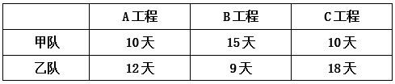
问两队合作完成这3个工程至少需要多少天（不足1天算1天）？
答案：D
解析：根据题意，赋值A工程的工程总量为60，B工程为45，C工程为90，则甲、乙两队完成A、B、C三个工程的工作效率如下：
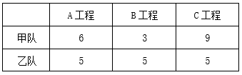
要想完成这3个工程的时间尽量少，需要让甲、乙两队优先完成各自擅长的工程。对比发现，甲队更擅长C工程，乙队更擅长B工程。则甲队优先完成C工程所需时间为10天，同时乙队完成B工程需要9天，此时乙队可再独自做10-9=1天A工程。甲队完成C工程后，两队再共同完成A工程，还需天，则两队合作完成这3个工程至少需要10+5=15天。
38. 某考试有30人参加，每人得分都是0~100之间的整数且互不相同。已知得分不低于90的人平均分为93.8分，小姜得了92分，问他的成绩排名最低可能是第几名？
答案：A
解析：设得分不低于90的有n个人。根据题意“每人得分都是0~100之间的整数且互不相同”，则分数不低于90的人数最多为90~100分各1人，即；总分数为n个整数之和，即总分数＝93.8n为整数，则n只能为5或10。
若n＝10，则前十名的总分数为93.8×10＝938分。因分数为互不相同的整数，则前十名总分最低为90+91+92+93+94+95+96+97+98+99＝945>938，n＝10不成立，则n＝5，排除C、D两项。
n＝5，则前五名总分数为93.8×5＝469分。问“排名最低可能是第几名”，代入B项，92分为第5名，则前五名总分数最低为92+93+94+95+96＝470>469，不成立，排除。
39. 一块梯形场地如下图所示，已知OA=0.6OD，现在需要将这块场地拓展为一块长方形场地，问扩展后场地面积比原来至少增加：
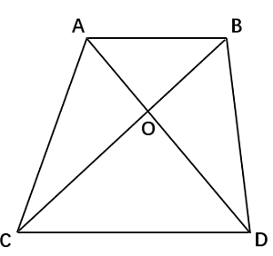
答案：B
解析：场地要扩展成长方形且面积增加最少，需以梯形的最长底边为长方形的长，梯形的高为长方形的宽，扩展后的场地EFCD如下图所示。在梯形ABCD中， ，
， ，赋值，，设梯形的高为
，赋值，，设梯形的高为 ，则。扩展后的长方形场地面积最小为
，则。扩展后的长方形场地面积最小为 ，扩展后场地面积比原来至少增加。
，扩展后场地面积比原来至少增加。

40. 某社区干部每周一参加工作例会，每月10日、20日接访群众。已知8月与9月共有2次接访群众与工作例会在同一天，问当年9月1日是：
答案：C
解析：根据题意可知，8月10日、20日，9月10日、20日，这4天中有2天既接访群众又参加工作例会，即这4天中仅有2天是周一。这4天中相邻2天间隔天数依次为10天、21天、10天，21天为7的倍数，则仅8月20日与9月10日的星期数相同，故8月20日与9月10日为周一，则9月3日为周一，9月1日为周六。
判断推理
图形推理
41. 从所给的四个选项中，选择最合适的一个填入问号处，使之呈现一定的规律性：
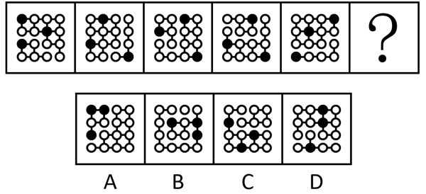
答案：D
解析：元素组成不同，且无明显属性规律，考虑数量规律。观察发现，题干每幅图形均分为2个部分，且其中一个部分有1个黑球，另一个部分有2个黑球，只有D项符合规律。
42. 从所给的四个选项中，选择最合适的一个填入问号处，使之呈现一定的规律性：
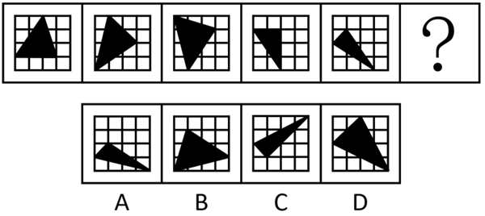
答案：A
解析：元素组成相同，优先考虑位置规律。题干图形出现十六宫格，可以优先考虑内外分开看。观察发现，题干图形中黑色三角形均存在三个顶点，其中外圈的两个顶点在外圈依次逆时针平移一格，内圈的顶点在内圈依次逆时针平移一格，故？处图形也应符合此规律，只有A项符合。
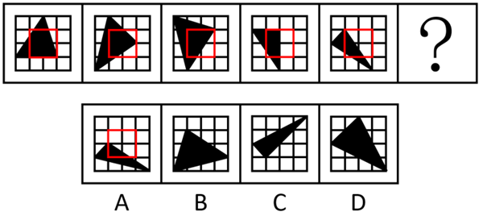
43. 从所给的四个选项中，选择最合适的一个填入问号处，使之呈现一定的规律性：
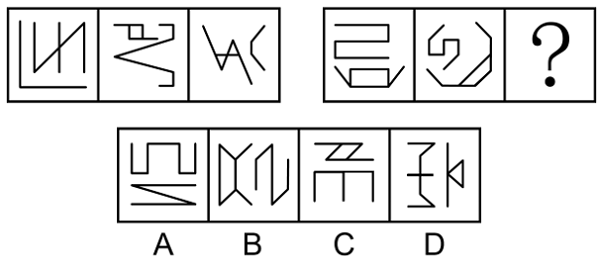
答案：B
解析：元素组成不同，优先考虑属性规律。观察发现，题干图形均由2个图形组成，且出现等腰元素，考虑对称性，题干均由1个中心对称图形和1个轴对称图形构成，排除D项；继续观察发现，题干图形出现明显的多端点图形，考虑笔画数，题干第一组图形笔画数均为3，其中轴对称图形为一笔画，中心对称图形为两笔画，第二组前两个图形笔画数均为3，其中中心对称图形为一笔画，轴对称图形为两笔画，故？处图形的笔画数应为3，且中心对称图形为一笔画，轴对称图形为两笔画，只有B项符合。
44. 从所给的四个选项中，选择最合适的一个填入问号处，使之呈现一定的规律性：
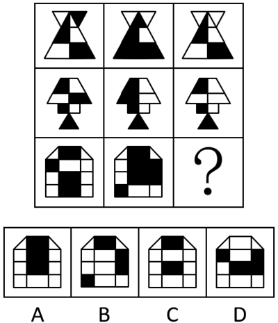
答案：C
解析：元素组成相似，优先考虑样式规律。观察发现，九宫格每行图形轮廓和分割区域相同，优先考虑黑白运算。第一行图形的运算规律为：白+黑=白，白+白=白，黑+白=白，黑+黑=黑；经验证，第二行图形符合此规律；第三行图形应用此规律，只有C项符合。
45. 左边为给定的多面体，现用经P、Q、R三点的平面对其进行切割，切面为：
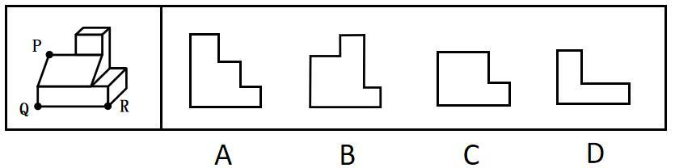
答案：B
解析：本题考查截面图。根据平面公理“过不在一条直线上的三点，有且只有一个平面”可以得出，经过P、Q、R三点可以确定唯一的切面（即截面），即为B项，如下图所示：
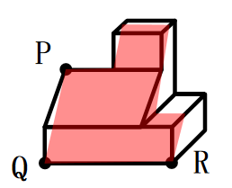
46. 下图为由2个正方体组合而成的长方体，问这2个正方体的外表面展开图可能分别是：
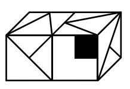
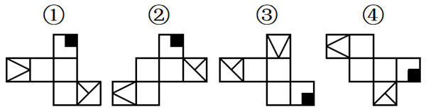
答案：D
解析：将题干2个正方体的面标上字母序号，并在立体图形和外表面展开图的“T”字形面（面e和面g）中以“T”字形中线端点为起始点，顺时针描边标号，如下图所示。
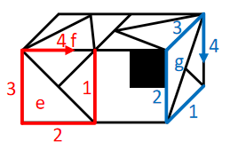
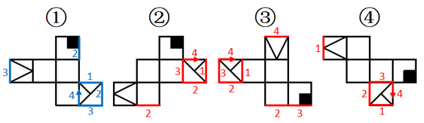
图①中，标出“T字形”面中对应的边2和边3后发现，二者与题干右侧正方体中面g的边2和边3对应一致，故图①可能是题干右侧正方体的外表面展开图；
图②中，标出“T字形”面中对应的边2和边3后发现，二者与题干右侧正方体中面g的边2和边3对应不一致，故图②不可能是题干右侧正方体的外表面展开图，标出“T字形”面中对应的边4后发现，与题干左侧正方体中面e的边4对应不一致，故图②不可能是题干左侧正方体的外表面展开图；
图③中，标出“T字形”面中对应的边4后发现，该公共边与题干左侧正方体中面e的边4对应一致，故图③可能是题干左侧正方体的外表面展开图；
图④中，标出“T字形”面中对应的边2和边3后发现，二者与题干右侧正方体中面g的边2和边3对应不一致，故图④不可能是题干右侧正方体的外表面展开图，标出“T字形”面中对应的边4后发现，与题干左侧正方体中面e的边4对应不一致，故图④不可能是题干左侧正方体的外表面展开图。
综上，2个正方体的外表面展开图可能是①和③，对应D项。
47. 左边为由12个白色正方体和3个灰色正方体组合而成的多面体前后两面直观图，问其可以由除哪项外的三个多面体组合而成？
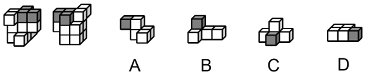
答案：C
解析：本题考查立体拼合。题干多面体可以由A、B、D三项中的立体图形拼合而成，具体拼合过程如下图所示：
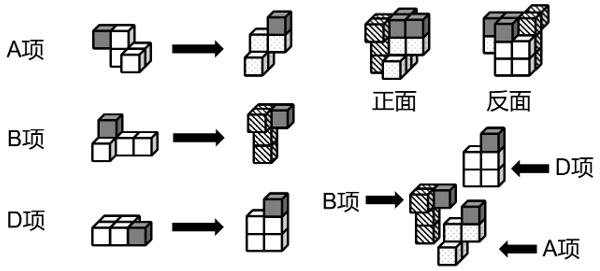
本题为选非题，
48. 把下面的六个图形分为两类，使每一类图形都有各自的共同特征或规律，分类正确的一项是：
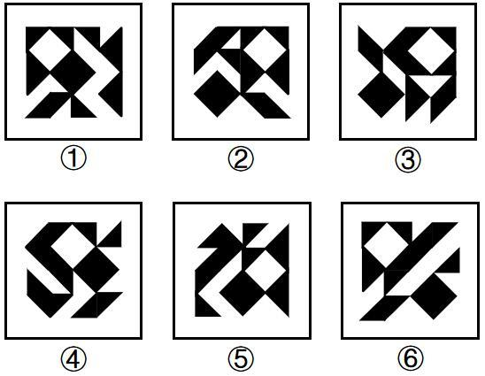
答案：A
解析：本题为分组分类题目。元素组成相同，但整体看没有明显的位置规律。观察发现，题干每幅图中均有一个黑菱形和一个白菱形，且图①④⑤中的黑菱形和白菱形相交于线，图②③⑥中的黑菱形和白菱形不相交。故图①④⑤为一组，图②③⑥为一组。
49. 把下面的六个图形分为两类，使每一类图形都有各自的共同特征或规律，分类正确的一项是：
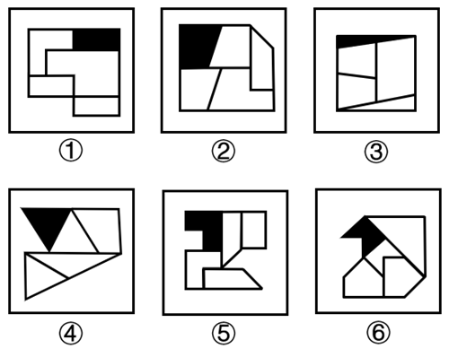
答案：B
解析：元素组成不同，且无明显属性规律，优先考虑数量规律。观察发现，题干每幅图中均存在一个黑色面和四个白色面，但根据面的数量无法分组分类，故考虑面的细化。再次观察发现，每幅图中均有1-2个白色面形状与黑色面形状相同，故考虑相同形状的面，图①②④中黑色面的形状与2个白色面形状一致，图③⑤⑥中黑色面的形状与1个白色面形状一致，故图①②④为一组，图③⑤⑥为一组。
50. 把下面6个图形分为两类，使每一类图形都有各自的共同特征或规律，分类正确的一项是：
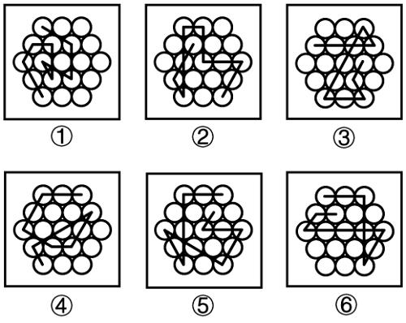
答案：A
解析：题干图形均由正六边形宫格及若干线条组成，且线条之间都存在一个十字交叉点，观察十字交叉点的位置，图①④⑤中十字交叉点位于白球外部，图②③⑥中十字交叉点位于白球内部，故图①④⑤为一组，图②③⑥为一组，只有A项符合。
判断推理
定义判断
51. 选矿是指用物理、化学或者物理与化学相结合的方法，将原矿中的有用矿物与伴生的无用固定物质（脉石）或有害矿物分开的过程。选矿可显著提高矿石的质量，减少运输费用，降低冶炼成本，进而实现综合利用。
根据上述定义，下列没有体现选矿过程的是：
答案：C
解析：第一步：找出定义关键词。
“用物理、化学或者物理与化学相结合的方法”、“将原矿中的有用矿物与伴生的无用固定物质（脉石）或有害矿物分开的过程”。
第二步：逐一分析选项。
A项：利用矿物颗粒电性的差别，属于物理方法，符合“用物理、化学或者物理与化学相结合的方法”，在高压电场中挑选出白钨矿、赤铁矿等（有用物质），通过电机分离除尘（伴生的无用固定物质），符合“将原矿中的有用矿物与伴生的无用固定物质（脉石）或有害矿物分开的过程”，符合定义，排除；
B项：利用水枪和洗矿槽等设备清洗锡矿石，属于物理方法，符合“用物理、化学或者物理与化学相结合的方法”，将锡矿石中的泥土等杂质（伴生的无用固定物质）洗去，同时也可以将部分轻矿物冲走，实现锡石（有用矿物）初步富集，符合“将原矿中的有用矿物与伴生的无用固定物质（脉石）或有害矿物分开的过程”，符合定义，排除；
C项：通过敲击、光照、观察皮壳等方法对开采的翡翠原石进行筛选，挑选优质原石，仅是对原石整体品质进行判断与挑选，不涉及对原石中的物质分开的过程，不符合“将原矿中的有用矿物与伴生的无用固定物质（脉石）或有害矿物分开的过程”，不符合定义，当选；
D项：将铜矿矿石破碎到一定的粒度后，属于物理方法，混以少量的食盐和煤粉隔氧加热，属于化学方法，符合“用物理、化学或者物理与化学相结合的方法”，矿石中的铜（有用矿物）便以金属状态析出，由此获得铜精矿，符合“将原矿中的有用矿物与伴生的无用固定物质（脉石）或有害矿物分开的过程”，符合定义，排除。
本题为选非题，
52. 波特五力模型是一种竞争分析工具，用于评估一个行业的竞争力和吸引力。该模型通过对同行业竞争对手的威胁，潜在进入者的威胁、替代品的威胁、上游供应商的议价能力和下游购买者的议价能力这五个方面的分析，帮助企业了解其所处行业的竞争环境，以制定相应的竞争策略。
根据上述定义，关于康复机器人行业，对下列问题的分析不能归入波特五力模型的是：
答案：D
解析：第一步：找出定义关键词。
“同行业竞争对手的威胁”、“潜在进入者的威胁”、“替代品的威胁”、“上游供应商的议价能力”、“下游购买者的议价能力”、“帮助企业了解其所处行业的竞争环境，以制定相应的竞争策略”。
第二步：逐一分析选项。
A项：康复机器人行业准入门槛高吗？需要强大的技术能力和创新能力吗？问题中的“准入门槛”、“技术能力和创新能力”直接关系到潜在企业能否进入康复机器人行业，符合波特五力模型中的“潜在进入者的威胁”，符合定义，排除；
B项：医院和康复中心患者规模如何？对于康复机器人的需求有多大？问题中的“医院”和“康复中心”是康复机器人的“下游购买者”，“患者规模”与“需求程度”会直接影响购买者采购时的“议价能力”，符合波特五力模型中的“下游购买者的议价能力”，符合定义，排除；
C项：与传统物理治疗等康复治疗方法相比，康复机器人有竞争力吗？问题中的“传统物理治疗”是康复机器人的“替代方案”，是在分析“替代品”的竞争力对行业的威胁，符合波特五力模型中的“替代品的威胁”，符合定义，排除；
D项：康复机器人企业内部各部门之间的协同合作程度高吗？问题中的“企业内部各部门之间的协同合作程度”属于企业“内部管理”的范畴，不符合波特五力模型中的任何一个，不符合定义，当选。
本题为选非题，
53. 药学服务是指药师应用药学专业知识向公众（包括医护人员、患者及家属）提供直接的、负责任的、与药物使用有关的服务，以提高药物治疗的安全性、有效性和经济性。
根据上述定义，下列没有体现药学服务的是：
答案：C
解析：第一步：找出定义关键词。
“药师应用药学专业知识”、“向公众（包括医护人员、患者及家属）提供直接的、负责任的、与药物使用有关的服务”、“提高药物治疗的安全性、有效性和经济性”。
第二步：逐一分析选项。
A项：该项说的是药师与主治医生协商调整了患者的用药方案，并给予其相应的用药教育和指导，说明药师向患者直接提供了药物相关指导，符合“药师应用药学专业知识”、“向公众（包括医护人员、患者及家属）提供直接的、负责任的、与药物使用有关的服务”、“提高药物治疗的安全性、有效性和经济性”，符合定义，排除；
B项：该项说的是药师在社区药房为长期服药的患者提供健康用药建议，说明药师用专业知识直接向患者提供健康用药建议，符合“药师应用药学专业知识”、“向公众（包括医护人员、患者及家属）提供直接的、负责任的、与药物使用有关的服务”、“提高药物治疗的安全性、有效性和经济性”，符合定义，排除；
C项：该项说的是药师给患者条码，患者扫码后会显示药物的使用医嘱，首先药师提供给患者的是条码，而非直接提供药物相关服务，且显示的是医嘱，说明是医生对药物的嘱托，并不是药师提供的用药建议，不符合“药师应用药学专业知识”、“向公众（包括医护人员、患者及家属）提供直接的、负责任的、与药物使用有关的服务”，不符合定义，当选；
D项：该项说的是药师审核某患者处方的合法性，评估病情与用药匹配度及疗程合理性，说明药师用专业知识直接向患者提供了用药匹配度的建议，能够提升药物的安全性和有效性，符合“药师应用药学专业知识”、“向公众（包括医护人员、患者及家属）提供直接的、负责任的、与药物使用有关的服务”、“提高药物治疗的安全性、有效性和经济性”，符合定义，排除。
本题为选非题，
54. 均变论认为，支配各种地质过程的法则在地质历史上没有发生过变化，现在起作用的各种自然营力在漫长的地质过程中具有普遍的均一性，即地质演变是一个渐变的过程，具有相同方式和相同的强度；地球上生物的种与种之间有过渡关系，生物进化过程是极其漫长的。灾变论认为，在整个地质发展的过程中，地球经常发生各种突如其来的、短暂的全球性灾难性变化，这些变化强烈地改变了地球的面貌；地球上生物的变化是反复多次灾变的结果。
根据上述定义，下列说法最能体现灾变论观点的是：
答案：B
解析：第一步：找出定义关键词。
均变论：“支配各种地质过程的法则在地质历史上没有发生过变化”、“现在起作用的各种自然营力在漫长的地质过程中具有普遍的均一性”、“地球上生物的种与种之间有过渡关系，生物进化过程是极其漫长的”。
灾变论：“地球经常发生各种突如其来的、短暂的全球性灾难性变化，这些变化强烈地改变了地球的面貌”、“地球上生物的变化是反复多次灾变的结果”。
第二步：逐一分析选项。
A项：“我们找不到开始的痕迹，也看不到结束的迹象”，体现了“支配各种地质过程的法则在地质历史上没有发生过变化”、“地球上生物的种与种之间有过渡关系，生物进化过程是极其漫长的”，符合“均变论”定义，不符合“灾变论”定义，排除；
B项：“地质记录是一部被鲜血和火焰写成的史诗”，“鲜血和火焰”隐喻的是灾难，体现了“地球经常发生各种突如其来的、短暂的全球性灾难性变化，这些变化强烈地改变了地球的面貌”，符合“灾变论”定义，当选；
C项：“现在是通往过去的一把钥匙”，体现了“支配各种地质过程的法则在地质历史上没有发生过变化”、“现在起作用的各种自然营力在漫长的地质过程中具有普遍的均一性”、“地球上生物的种与种之间有过渡关系，生物进化过程是极其漫长的”，符合“均变论”定义，不符合“灾变论”定义，排除；
D项：“自然界里没有飞跃”，体现了“地球上生物的种与种之间有过渡关系，生物进化过程是极其漫长的”，符合“均变论”定义，不符合“灾变论”定义，排除。
55. 联想的相似律是指两种在性质、特征上相似的事物或属性可形成联想；对比律是指具有相反特点的事物或属性可形成联想；接近律是指在空间与时间上接近的事物或属性可形成联想。
根据上述定义，下列说法正确的是：
答案：D
解析：第一步：找出定义关键词。
相似律：“两种在性质、特征上相似的事物或属性可形成联想”；
对比律：“具有相反特点的事物或属性可形成联想”；
接近律：“在空间与时间上接近的事物或属性可形成联想”。
第二步：逐一分析选项。
A项：由树木想到森林，森林由树木组成，空间上接近，符合“在空间与时间上接近的事物或属性可形成联想”，符合“接近律”定义。由蓝天想到飞机，飞机在天空中飞，符合“在空间与时间上接近的事物或属性可形成联想”，符合“接近律”定义，二者均不符合“对比律”定义，说法错误，排除；
B项：由狐狸想到狡猾，狐狸的特征是狡猾，符合“两种在性质、特征上相似的事物或属性可形成联想”，符合“相似律”定义。由电灯想到房间，电灯安装在房间里，空间接近，符合“在空间与时间上接近的事物或属性可形成联想”，符合“接近律”定义，不符合“相似律”定义，说法错误，排除；
C项：由钢铁想到坚强，钢铁性质坚硬，用来比喻坚强，符合“两种在性质、特征上相似的事物或属性可形成联想”，符合“相似律”定义，不符合“接近律”定义。由酷暑想到严寒，酷暑和严寒在温度上相反，符合“具有相反特点的事物或属性可形成联想”，符合“对比律”定义，说法错误，排除；
D项：由黑暗想到光明，黑暗与光明是相反概念，符合“具有相反特点的事物或属性可形成联想”，符合“对比律”定义。由花圃想到蝴蝶，花圃里有蝴蝶，空间接近，符合“在空间与时间上接近的事物或属性可形成联想”，符合“接近律”定义，说法正确，当选。
56. 商品动销率是指在售的商品品种数与库存商品总品种数的比率。商品库销比是指商品库存量与销售额的比率。商品滞销率是指滞销的商品品种数占库存商品总品种数的比率。商品损耗率是指在一定的保管条件下，某商品在储存保管期间，其自然损耗量与商品在库总量的比例。
根据上述定义，下列说法正确的是：
答案：A
解析：第一步：找出定义关键词。
商品动销率：“在售的商品品种数与库存商品总品种数的比率”；
商品库销比：“商品库存量与销售额的比率”；
商品滞销率：“滞销的商品品种数占库存商品总品种数的比率”；
商品损耗率：“一定的保管条件下，某商品在储存保管期间”、“自然损耗量与商品在库总量的比例”。
第二步：逐一分析选项。
A项：根据商品动销率 ，若商品动销率超过100%，说明商品在售品种数高于库存商品总品种数，说法正确，当选；
，若商品动销率超过100%，说明商品在售品种数高于库存商品总品种数，说法正确，当选；
B项：根据商品损耗率 ，若商品损耗率高，表明商品自然损耗量相对升高或者商品在库总量相对降低，无法必然得到库存积压情况或销售态势情况，说法错误，排除；
，若商品损耗率高，表明商品自然损耗量相对升高或者商品在库总量相对降低，无法必然得到库存积压情况或销售态势情况，说法错误，排除；
C项：根据商品滞销率，若库存商品数一定时，商品滞销率越高，说明滞销的“商品品种数”越多，而不是滞销的“商品”越多（可能仅指商品数量），说法错误，排除；
D项：根据商品库销比 ，当商品库存量越大，销售额越高时，因无法确定比值的大小关系，所以无法得知商品库销比一定会越大，说法错误，排除。
，当商品库存量越大，销售额越高时，因无法确定比值的大小关系，所以无法得知商品库销比一定会越大，说法错误，排除。
57. 动作预期是指运动员在比赛过程中，根据已有信息，对即将发生的动作结果进行预测的过程。在这一过程中，运动员主要依赖两类信息：运动学信息和情境先验信息。运动学信息包括对手的动作、器材的运动轨迹或队员之间的相对位置，情境先验信息则涉及比赛情境中事件发生的概率。
根据上述定义，下列不涉及上述任何一种信息的是：
答案：B
解析：第一步：找出定义关键词。
动作预期：“运动员”、“在比赛过程中”、“根据已有信息，对即将发生的动作结果进行预测”；
运动学信息：“对手的动作”、“器材的运动轨迹”、“队员之间的相对位置”；
情境先验信息：“比赛情境中事件发生的概率”。
第二步：逐一分析选项。
A项：篮球队员甲，符合“运动员”，根据对手今日比赛罚篮命中率不高，在对手投篮时选择直接犯规，即预测犯规后对手会罚篮不中，符合“在比赛过程中”、“根据已有信息，对即将发生的动作结果进行预测”、“比赛情境中事件发生的概率”，符合“情境先验信息”定义，排除；
B项：网球运动员乙知道对手在比赛前有一系列习惯性动作，不符合“在比赛过程中”，且乙是暗自提醒自己不要被干扰，未利用这些信息进行预测，不符合“对即将发生的动作结果进行预测”，不符合“动作预期”定义，进而也不符合“运动学信息”定义和“情境先验信息”定义，当选；
C项：羽毛球双打运动员丙，符合“运动员”，根据对方准备接发球的球员位置稍微靠前，预测对方来不及转身或后退接球，符合“在比赛过程中”、“根据已有信息，对即将发生的动作结果进行预测”、“比赛情境中事件发生的概率”，符合“情境先验信息”定义，排除；
D项：乒乓球运动员丁，符合“运动员”，根据对方发过来的球位置较低、速度较慢，预测球会擦网变线，符合“在比赛过程中”、“根据已有信息，对即将发生的动作结果进行预测”、“器材的运动轨迹”、“比赛情境中事件发生的概率”，符合“运动学信息”定义，也符合“情境先验信息”定义，排除。
本题为选非题，
58. 在民法理论上，可以将条件划分为随意条件、混合条件与偶成条件。随意条件又分为纯粹随意条件和非纯粹随意条件。纯粹随意条件的成就与否完全由一方当事人的意思决定；非纯粹随意条件的成就与否除一方当事人的意思外，尚须另一方当事人发生某种事件；混合条件的成就与否取决于一方当事人与第三人的意思；偶成条件的成就与否无关当事人的意思，但可能受制于第三人的意思。
根据上述定义，下列属于混合条件的是：
答案：C
解析：第一步：找出定义关键词。
纯粹随意条件：“成就与否完全由一方当事人的意思决定”；
非纯粹随意条件：“成就与否除一方当事人的意思外，尚须另一方当事人发生某种事件”；
混合条件：“成就与否取决于一方当事人与第三人的意思”；
偶成条件：“成就与否无关当事人的意思，但可能受制于第三人的意思”。
第二步：逐一分析选项。
A项：小王与爸爸约定，如果小王考上的研究生院校让爸爸满意，爸爸就资助其旅游经费，双方约定的达成完全取决于爸爸是否满意，符合“成就与否完全由一方当事人的意思决定”，符合“纯粹随意条件”定义，不符合“混合条件”定义，排除；
B项：某店铺与供应商约定，如果三伏的第一天下雨，则今年的雨伞就多进货30%，是否多进货30%取决于天气，与双方当事人无关，符合“成就与否无关当事人的意思，但可能受制于第三人的意思”，符合“偶成条件”定义，不符合“混合条件”定义，排除；
C项：甲厂与乙厂约定，如果甲厂能与丙公司签订承揽合同，甲厂就在乙厂购置原料板材，甲厂与乙厂达成合作，需要甲厂（一方当事人）有签订意愿，丙公司（第三人）同意签订，符合“成就与否取决于一方当事人与第三人的意思”，符合“混合条件”定义，当选；
D项：小李与哥哥约定，如果小李能在开学前考取驾照，哥哥就把现在开的这台车赠送给小李，哥哥有赠送车给小李的意愿，且需要小李在开学前考取驾照，符合“成就与否除一方当事人的意思外，尚须另一方当事人发生某种事件”，符合“非纯粹随意条件”定义，不符合“混合条件”定义，排除。
59. 分项累进淘汰法是指在对植株进行选种时，根据性状的相对重要性顺序排列，先按第一重要性状进行选择，然后在入选株内按第二重要性状进行选择，依此顺次累进的一种选种方法。
根据上述定义，下列对南瓜的选种方法属于分项累进淘汰法的是：
答案：B
解析：第一步：找出定义关键词。
“根据性状的相对重要性顺序排列进行选择”、“先按第一重要性状进行选择，然后在入选株内按第二重要性状进行选择”、“顺次累进”。
第二步：逐一分析选项。
A项：按株选目标性状出现的先后顺序进行淘汰，并非根据性状的相对重要性顺序排列进行选择，不符合“根据性状的相对重要性顺序排列进行选择”，不符合定义，排除；
B项：群体内的植株中无病是存活的基础，是第一重要性状，丰产性好体现经济价值，是第二重要性状，再根据产量性状顺次进行选择，在群体内先选择无病植株，再在这些无病植株内选择丰产性好的植株，最后根据产量性状顺次进行选择，是根据性状的相对重要性顺序排列进行选择，符合“根据性状的相对重要性顺序排列进行选择”、“先按第一重要性状进行选择，然后在入选株内按第二重要性状进行选择”、“顺次累进”，符合定义，当选；
C项：按照果实的大小、果型等性状初选，没有明确体现第一重要性状，且再按照综合性状入选标准进行复选，并非按照性状的相对重要性顺序排列进行选择，不符合“根据性状的相对重要性顺序排列进行选择”、“先按第一重要性状进行选择，然后在入选株内按第二重要性状进行选择”，不符合定义，排除；
D项：将需要鉴定的多个性状分别规定最低的入选标准，将低于入选标准的淘汰，没有明确体现性状的重要性顺序，并非按照性状的相对重要性顺序排列进行选择，不符合“根据性状的相对重要性顺序排列进行选择”、“先按第一重要性状进行选择，然后在入选株内按第二重要性状进行选择”，不符合定义，排除。
判断推理
类比推理
60. 与“经年：积岁”在逻辑关系上最相近的是：
答案：D
解析：第一步：判断题干词语间逻辑关系。
“经年”指经过一年或若干年，“积岁”指累积多年，二者均可指经过多年，为近义关系。
第二步：判断选项词语间逻辑关系。
A项：“善本”指古代书籍中文字讹误较少、学术或艺术价值上比一般本子优异的刻本或写本，“版本”指同一部书因编辑、传抄、刻版、排版或装订形式等的不同而产生的不同的本子，“善本”是“版本”的一种类型，二者不是近义关系，与题干逻辑关系不一致，排除；
B项：“秘方”指不公开的有显著医疗效果的药方，“偏方”指民间流传不见于古典医学著作的中药方，前者从是否公开角度划分，后者从是否正规角度划分，二者为交叉关系，与题干逻辑关系不一致，排除；
C项：“仲夏”指夏季的第二个月，是“夏季”的一部分，二者为组成关系，与题干逻辑关系不一致，排除；
D项：“黎民”指平民、民众，“百姓”指军人和官员以外的人，二者均可指普通民众，为近义关系，与题干逻辑关系一致，当选。
61. 与“口腔：唾液：淀粉酶”在逻辑关系上最相近的是：
答案：C
解析：第一步：判断题干词语间逻辑关系。
唾液是口腔的分泌物，前两词是对应关系，淀粉酶是唾液的组成成分，后两词是组成关系。
第二步：判断选项词语间逻辑关系。
A项：孜然是一种常用的中草药，其种子可以制作为调味品，与题干逻辑关系不一致，排除；
B项：叶肉是叶片的组成部分，前两词是组成关系，与题干逻辑关系不一致，排除；
C项：松脂是松树的分泌物，前两词是对应关系，树脂醇是松脂的组成成分，后两词是组成关系，与题干逻辑关系一致，当选；
D项：试纸是一种浸渍化学试剂的纸质检测工具，试剂和试纸是配套使用的对应关系，与题干逻辑关系不一致，排除。
62. 与“护士人数：护患比：患者人数”在逻辑关系上最相近的是：
答案：A
解析：第一步：判断题干词语间逻辑关系。
护患比=护士人数/患者人数，三者满足公式关系。
第二步：判断选项词语间逻辑关系。
A项：平均理赔金额=理赔总额/理赔次数，与题干逻辑关系一致，当选；
B项：签收率=实际签收数量/应签收数量，但词语顺序与题干不一致，排除；
C项：流动比率=流动资产/流动负债，但词语顺序与题干不一致，排除；
D项：入住率=入住客房数/客房数，而入住客房数旅客数，每间客房入住的旅客数可能不同，与题干逻辑关系不一致，排除。
63. 颅内疾病 对于 （ ） 相当于 （ ） 对于 岩石断裂
依次填入括号中最恰当的是：
答案：D
解析：逐一代入选项。
A项：颅内感染是颅内疾病的一种，二者为种属关系；岩石熔融和岩石断裂是两种不同的地质现象，二者为并列关系，前后逻辑关系不一致，排除；
B项：颅内疾病是机体疾病的一种，二者为种属关系；地壳应力是导致岩石断裂的原因，二者为因果关系，前后逻辑关系不一致，排除；
C项：核磁共振是可以用来诊断颅内疾病的工具，二者为诊断工具与疾病的对应关系；地下采样可以用来研究岩石断裂，但二者不是诊断工具与疾病的对应关系，前后逻辑关系不一致，排除；
D项：颅内疾病会导致视野缺失，二者为因果对应关系；冰川运动会导致岩石断裂，二者为因果对应关系，前后逻辑关系一致，当选。
判断推理
逻辑判断
64. 考古人员在某地发掘出一些似鸟动物化石，同位素测年显示这些动物生存于中侏罗世晚期（距今1.72亿～1.64亿年）。经考古推算，这些似鸟动物体型与现代鸟类大致接近，尾巴很短，最重要的是它们都具有愈合的尾综骨。考古人员据此认为，这些动物一定属于鸟类。
以下哪项最有可能是考古人员论证的前提？
答案：C
解析：第一步：找出论点和论据。
论点：这些动物一定属于鸟类。
论据：这些似鸟动物体型与现代鸟类大致接近，尾巴很短，最重要的是它们都具有愈合的尾综骨。
本题论点讨论的是这些似鸟动物属于鸟类，论据讨论的是这些似鸟动物有愈合的尾综骨，二者话题不一致，加强优先考虑搭桥，即在“鸟类”和“愈合的尾综骨”之间建立联系。
第二步：逐一分析选项。
A项：该项指出这些似鸟动物与现代鸟类具有相似的脚骨，但是不明确脚骨是否能够判断这些似鸟动物为鸟类，属于不明确选项，无法加强，排除；
B项：该项强调这些化石保存的尾综骨等形态清晰，说明这些动物确实具有尾综骨，可以加强论据，但不是论证成立的前提，排除；
C项：该项指出鸟类与爬行动物的显著区别是鸟类最后几枚尾椎愈合成为尾综骨，建立了“鸟类”和“愈合的尾综骨”之间的联系，为搭桥项，是论证成立的前提，当选；
D项：该项强调尾综骨结构对似鸟动物独立运动以及飞行能力的重要性，但不能判断其是否属于鸟类，属于不明确选项，无法加强，排除。
65. S遗址近年来出土了大量与众不同的奇特文物，不少人认定S遗址展现了一个特色鲜明且区域封闭的南部地方文化。然而最新研究发现，在距离S遗址较远的北部Y遗址，出土的青铜器曾大量使用了来自S遗址附近矿床的铅铜矿料，在S遗址文化消亡后，Y遗址出土的青铜器基本不再含有这种矿料。这说明S遗址不是封闭区域，其所在的古国曾与Y遗址的古国或其他区域存在着交流互动。
以下哪项如果为真，没有支持上述结论？
答案：A
解析：第一步：找出论点和论据。
论点：S遗址不是封闭区域，其所在的古国曾与Y遗址的古国或其他区域存在着交流互动。
论据：在距离S遗址较远的北部Y遗址，出土的青铜器曾大量使用了来自S遗址附近矿床的铅铜矿料，在S遗址文化消亡后，Y遗址出土的青铜器基本不再含有这种矿料。
本题为选非题，将可以加强的选项排除即可。
第二步：逐一分析选项。
A项：该项说的是S遗址的青铜器制造业在当时非常发达，但没有说明S遗址是否和其他区域存在交流互动，无法加强，当选；
B项：该项说的是S遗址出土了很多带有明显Y遗址文化元素的青铜器，说明S遗址所在的古国与Y遗址的古国存在着交流互动，补充论据，可以加强，排除；
C项：该项说的是S遗址出土的部分文物采用了Y遗址多见的“泥模块铸法”，说明S遗址所在的古国与Y遗址的古国存在着交流互动，补充论据，可以加强，排除；
D项：该项说的是原本流行于东部地区的牙璋、铜牌饰、陶盉等也在位于南部的S遗址中大量出现，说明S遗址所在的古国与其他区域存在着交流互动，补充论据，可以加强，排除。
本题为选非题，
66. 完善城乡融合发展体制机制是破除我国城乡二元结构、拓展高质量发展空间的必要举措。只有完善农业农村优先发展的投入保障机制，并且优化城乡公共资源配置机制，才能完善城乡融合发展体制机制。只有加大中央预算内投资和地方政府专项债券支持力度，并且提高土地出让收入用于农业农村的比例，才能完善农业农村优先发展的投入保障机制。只有推进户籍制度改革，才能优化城乡公共资源配置机制。
由此可以推出的是（ ）。
答案：D
解析：第一步：翻译题干。
①破除我国城乡二元结构、拓展高质量发展空间完善城乡融合发展体制机制；
②完善城乡融合发展体制机制完善农业农村优先发展的投入保障机制 且 优化城乡公共资源配置机制；
③完善农业农村优先发展的投入保障机制加大中央预算内投资和地方政府专项债券支持力度 且 提高土地出让收入用于农业农村的比例；
④优化城乡公共资源配置机制推进户籍制度改革。
①②③可串联得到：⑤破除我国城乡二元结构、拓展高质量发展空间完善城乡融合发展体制机制完善农业农村优先发展的投入保障机制加大中央预算内投资和地方政府专项债券支持力度 且 提高土地出让收入用于农业农村的比例；
①②④可串联得到：⑥破除我国城乡二元结构、拓展高质量发展空间完善城乡融合发展体制机制优化城乡公共资源配置机制推进户籍制度改革。
第二步：逐一分析选项。
A项：该项翻译为“推进户籍制度改革优化城乡公共资源配置机制”，是对④的肯后，肯后得不到确定性的结论，无法推出，排除；
B项：该项翻译为“完善农业农村优先发展的投入保障机制完善城乡融合发展体制机制”，是肯定②箭头后“且关系”中的一部分，肯后得不到确定性的结论，不能推出，排除；
C项：该项翻译为“提高土地出让收入用于农业农村的比例完善农业农村优先发展的投入保障机制”，是肯定③箭头后“且关系”中的一部分，肯后得不到确定性的结论，不能推出，排除；
D项：该项翻译为“破除我国城乡二元结构、拓展高质量发展空间加大中央预算内投资和地方政府专项债券支持力度”，是对⑤的肯前，肯前必肯后，可以推出，当选。
67. 平台企业依赖金融资本投资，需要迎合金融市场的估值逻辑，通过轻资产运营、扩大市场规模和用户数据挖掘与开发等，来提升自身在金融市场上的估值。随着平台企业金融化程度的日益加深，平台劳动者的具体劳动和生产过程也在发生变化。研究者认为，平台企业金融化程度的加深使得平台劳动者的劳动权益保护问题日益突出。
以下哪项如果为真，最能支持上述研究者的观点？
答案：B
解析：第一步：找出论点和论据。
论点：平台企业金融化程度的加深使得平台劳动者的劳动权益保护问题日益突出。
论据：无。
本题只有论点，没有论据，加强优先考虑补充论据。
第二步：逐一分析选项。
A项：选项指出为扩大市场规模、争夺消费者注意力，平台企业容易陷入无序竞争，与论点讨论的平台企业金融化程度加深是否会导致平台劳动者的劳动权益保护问题日益突出无关，无关项，无法加强，排除；
B项：选项指出为塑造轻资产企业形象、摆脱劳动密集型标签，说明平台企业金融化程度在加深，平台企业采用弹性用工制，增加劳动者就业不稳定性，说明平台劳动者的具体劳动和生产过程发生了变化，且增加了平台劳动者的劳动权益保护问题，补充论据，可以加强，当选；
C项：选项指出平台企业越来越注重员工培训，与论点讨论的平台企业金融化程度加深是否会导致平台劳动者的劳动权益保护问题无关，无关项，无法加强，排除；
D项：选项指出部分平台企业以缴纳保证金、押金或其他名义向劳动者收取财物，限制劳动者在多平台就业，但是不明确这些平台是否存在企业金融化程度的加深，不明确选项，无法加强，排除。
68. 一项针对中学生的研究发现：直接使用通用AI工具可短暂提高学生数学测试成绩，但最终削弱了学生的数学学习能力。研究持续一学期，学生被分为三组，分别在课堂练习阶段使用不同工具：①组使用标准课本和笔记；②组使用通用AI工具，可以直接查询答案；③组使用特别设计的AI工具，指导而不直接给出答案。随堂考核发现，②组和③组学生比①组学生的成绩高出48％和127％。但期末考试时，②组比①组成绩低了17%；而③组和①组无明显差异。
以下除哪项外，均能削弱上述结论？
答案：C
解析：第一步：找出论点和论据。
论点：直接使用通用AI工具可短暂提高学生数学测试成绩，但最终削弱了学生的数学学习能力。
论据：研究持续一学期，学生被分为三组，分别在课堂练习阶段使用不同工具：①组使用标准课本和笔记；②组使用通用AI工具，可以直接查询答案；③组使用特别设计的AI工具，指导而不直接给出答案。随堂考核发现，②组和③组学生比①组学生的成绩高出48％和127％。但期末考试时，②组比①组成绩低了17%；而③组和①组无明显差异。
本题论点和论据都在讨论使用AI工具对数学学习能力的影响，二者话题一致，且本题为削弱选非题，排除能削弱的选项即可。
第二步：逐一分析选项。
A项：该项指出研究结果不能说明正确使用AI工具的效果，说明实验过程存在漏洞，质疑了实验结果，削弱论据，可以削弱，排除；
B项：该项指出学生的数学基础水平、学习动机、课后自主练习等变量都会影响考试成绩，说明存在其他会影响学生成绩的因素，他因削弱，可以削弱，排除；
C项：该项指出研究仅针对数学学科，不能说明AI工具辅助教学对其他学科的影响，说明在数学科目上使用AI工具对学习能力确实存在影响，为加强项，无法削弱，当选；
D项：该项指出研究持续时间不够，不足以说明长期使用AI工具可能带来的效果，说明实验过程存在漏洞，质疑了实验结果，削弱论据，可以削弱，排除。
本题为选非题，
判断推理
为倡导团结合作精神，某单位举办了若干项目的双打比赛。该单位后勤部由王、吴、韩和宋4人组成网球、乒乓球和羽毛球3支双打队伍参赛，每支队伍由其中2人组成，4人均至少参加了其中的一支队伍。已知：
（1）王和韩没有参加同一个项目；
（2）若韩参加羽毛球项目，则宋参加网球项目；
（3）若王参加乒乓球项目，则吴参加网球项目，若王不参加乒乓球项目，则吴也不参加网球项目。
69. 对于3支双打队伍的组成情况，以下哪项是可能的？
答案：D
解析：第一步：分析题干条件。
（1）王、韩没有参加同一个项目；
（2）韩羽毛球宋网球；
（3）王乒乓球吴网球， 王乒乓球吴网球；
王乒乓球吴网球；
（4）每支队伍由其中2人组成，4人均至少参加了其中的一支队伍。
第二步：根据题干条件进行推理。
本题题干信息确定，选项信息充分，优先考虑排除法。
由条件（1）可知，王、韩没有参加同一个项目，排除A项；
由条件（2）可知，韩参加羽毛球，则宋参加网球，排除B项；
由条件（3）可知，王参加乒乓球，则吴参加网球，排除C项。
经验证，D项满足题干所有条件，当选。
70. 若宋和韩组队网球双打，则以下哪项一定正确？
答案：B
解析：第一步：分析题干条件。
（1）王、韩没有参加同一个项目；
（2）韩羽毛球宋网球；
（3）王乒乓球吴网球，王乒乓球吴网球；
（4）每支队伍由其中2人组成，4人均至少参加了其中的一支队伍；
（5）宋和韩组队网球。
第二步：根据题干条件进行推理。
根据条件（1）和（5）可知，王不参加网球；根据条件（4）和（5）可知，宋和韩组队网球，队伍已满2人，所以吴不参加网球，结合条件（3）可知，王不参加乒乓球；再结合条件（4）4人均至少参加了其中的一支队伍可知，王参加羽毛球。
71. 若吴参加3个项目，则以下哪项是可能的？
答案：A
解析：第一步：分析题干条件。
（1）王、韩没有参加同一个项目；
（2）韩羽毛球宋网球；
（3）王乒乓球吴网球，王乒乓球吴网球；
（4）每支队伍由其中2人组成，4人均至少参加了其中的一支队伍；
（5）吴参加了3个项目。
第二步：根据题干条件进行推理。
根据条件（4）和（5）可知，吴参加了网球、乒乓球和羽毛球3个项目，王、韩和宋每人均只参加1个项目，结合条件（3）“王乒乓球吴网球”可知，王参加乒乓球项目，此时，韩和宋只需要分别参加羽毛球和网球中的1个项目即可。综上所述，选项中只有A项可能正确。
72. 以下哪项中的两人可能同时组队网球和羽毛球双打？
答案：B
解析：第一步：分析题干条件。
（1）王、韩没有参加同一个项目；
（2）韩羽毛球宋网球；
（3）王乒乓球吴网球，王乒乓球吴网球；
（4）每支队伍由其中2人组成，4人均至少参加了其中的一支队伍。
第二步：根据题干条件进行推理。
题干问法为“可能”，优先使用代入法。
代入A项：王和吴同时组队网球和羽毛球双打，根据条件（3）“王乒乓球吴网球”可知，王参加乒乓球比赛，此时王参加乒乓球比赛、网球比赛和羽毛球比赛，根据条件（1）可知，韩没有比赛可以参加，不满足题干条件（4），排除；
代入B项：王和宋同时组队网球和羽毛球双打，此时韩参加乒乓球比赛，吴也参加乒乓球比赛，满足题干所有条件，可能为真，当选；
代入C项：吴和宋同时组队网球和羽毛球双打，根据条件（3）“王乒乓球吴网球”可知，王参加乒乓球比赛，结合条件（1）可知，韩不参加乒乓球比赛，此时韩没有比赛可以参加，不满足题干条件（4），排除；
代入D项：韩和宋同时组队网球和羽毛球双打，根据条件（4）可知，王和吴参加乒乓球比赛，此时不满足题干条件（3），排除。
73. 若宋和韩组队乒乓球双打，则以下哪项是可能的？
答案：D
解析：第一步：分析题干条件。
（1）王、韩没有参加同一个项目；
（2）韩羽毛球宋网球；
（3）王乒乓球吴网球，王乒乓球 吴网球；
吴网球；
（4）每支队伍由其中2人组成，4人均至少参加了其中的一支队伍；
（5）宋和韩组队乒乓球双打。
第二步：根据题干条件进行推理。
根据条件（4）与（5），可知乒乓球队人已满，则王与吴均不能参加乒乓球项目，结合条件（3），肯前必肯后，可得吴不参加网球项目，排除A、B两项；
根据吴不参加乒乓球项目，也不参加网球项目，结合条件（4），4人均至少参加了其中的一支队伍，可得吴必须参加羽毛球项目，那么宋和韩不可能同时参加羽毛球项目，排除C项。
资料分析

74. 2024年上半年，中国医药保健品进出口贸易顺差（出口额-进口额）比上年同期：
答案：C
解析：根据题干“2024年上半年······顺差（出口额-进口额）比上年同期”，结合选项为百分数，且出口额=进口额+顺差，可判定本题为混合增长率问题。定位统计表可得：2024年上半年，中国医药保健品进、出口额分别为451.76亿美元、525.79亿美元，同比增长率分别为-5.76%、1.96%。根据混合增长率口诀“混合后居中但不正中”可得，进口额增长率（-5.76%）＜出口额增长率（1.96%）＜顺差增长率，排除A、B两项。
2024年上半年中国医药保健品进出口贸易顺差 亿美元，根据线段法：距离与量成反比（一般用现期量代替基期量计算），可得：
亿美元，根据线段法：距离与量成反比（一般用现期量代替基期量计算），可得：
 ，解得：
，解得： ，在C项范围内。
，在C项范围内。
75. 2024年上半年，中药提取物出口额占医药保健品出口总额的比重比上年同期：
答案：D
解析：根据题干“2024年上半年······占······的比重比上年同期”，结合选项为上升了/下降了+百分点，可判定本题为两期比重问题。定位统计表可得：2024年上半年中国医药保健品出口总额为525.79亿美元（B），同比增长1.96%（b）；中药提取物出口额为14.92亿美元（A），同比增长-14.28%（a）。根据公式：两期比重差，则题干所求为 ，即约下降了0.53个百分点。在D项范围内。
，即约下降了0.53个百分点。在D项范围内。
76. 表中所列医药保健品12个小类中，2024年上半年进出口总额同比上升的有几类？
答案：A
解析：根据题干“······2024年上半年······同比上升的有几类”，结合材料给出2024年上半年各小类医药保健品进口额、出口额及分别的同比增速，可判定本题为混合增长率问题。定位统计表可得2024年上半年，医药保健品12个小类进口额、出口额及分别的同比增速。根据混合增长率口诀“混合居中不正中，偏向基期较大的（一般用现期代替）”，观察可知中成药、保健品、西药原料、生化药、保健康复用品、口腔设备与材料这6类的进、出口额同比增速均大于0，则进出口总额同比增速也大于0，则同比上升，均满足；中药材及饮片、医用敷料进、出口额同比增速均小于0，则进出口总额同比增速也小于0，则同比下降，均不满足；其余类别进、出口额同比增速一正一负，其中提取物：现期量出口额14.92亿美元>进口额3.58亿美元，则，即r<0，则同比下降，不满足；西成药：现期量进口额110.28亿美元>出口额35.24亿美元，则
 ，即r<0，则同比下降，不满足；一次性耗材：现期量出口额48.81亿美元>进口额19.55亿美元，则
，即r<0，则同比下降，不满足；一次性耗材：现期量出口额48.81亿美元>进口额19.55亿美元，则 ，即r>0，则同比上升，满足；医院诊断与治疗：现期量进口额138.23亿美元>出口额103.95亿美元，则
，即r>0，则同比上升，满足；医院诊断与治疗：现期量进口额138.23亿美元>出口额103.95亿美元，则 ，即r<0，则同比下降，不满足。
，即r<0，则同比下降，不满足。
综上可知，2024年上半年进出口总额同比上升的有中成药、保健品、西药原料、生化药、一次性耗材、保健康复用品、口腔设备与材料，共7类。
77. 将2024年上半年①医用敷料②一次性耗材③保健康复用品④口腔设备与材料进口额同比增量从高到低排序正确的是：
答案：C
解析：根据题干“······2024年上半年······同比增量从高到低排序······”，可判定本题为增长量比较问题。定位表格可得：2024年上半年，医用敷料、一次性耗材、保健康复用品、口腔设备与材料的进口额分别为2.60亿美元、19.55亿美元、9.04亿美元、7.31亿美元，同比增速分别为-8.34%、-3.05%、9.62%、14.27%。根据公式：增长量 ，则以上四类医疗器械进口额的同比增量分别为：①医用敷料：
，则以上四类医疗器械进口额的同比增量分别为：①医用敷料： 亿美元；②一次性耗材：亿美元；③保健康复用品：
亿美元；②一次性耗材：亿美元；③保健康复用品： 亿美元；④口腔设备与材料：
亿美元；④口腔设备与材料： 亿美元。比较可知，同比增量从高到低排序正确的是：④③①②。
亿美元。比较可知，同比增量从高到低排序正确的是：④③①②。
78. 以下饼图中，最能准确反映2024年上半年中国西药类进出口总额中，西药原料（白色）、西成药（横线）和生化药（黑色）占比关系的是：
- A.
- B.
- C.

- D.
答案：D
解析：根据题干“······最能准确反映2024年上半年······占比关系的是”，结合材料时间为2024年上半年，可判定本题为现期比重问题。定位统计表可知：2024年上半年，西药原料出口额为213.43亿美元、进口额为51.78亿美元；西成药出口额为35.24亿美元、进口额为110.28亿美元；生化药出口额为20.71亿美元、进口额为97.84亿美元。则2024年上半年，西药原料（白色）进出口额=213.43+51.78=265.21亿美元，西成药（横线）进出口额=35.24+110.28=145.52亿美元，生化药（黑色）进出口额=20.71+97.84=118.55亿美元。可知西药原料（白色）进出口额最大，排除C项；西药原料（白色）与西成药（横线）倍数关系为，排除A项；西成药（横线）与生化药（黑色）倍数关系为，排除B项。
2024年，我国企业发明专利产业化平均收益（平均每件已产业化的有效专利产生的收益）为869.5万元/件，较上年增长4.8％。其中，战略性新兴产业和未来产业领域的企业发明专利产业化平均收益分别为939.1万元/件和1132.7万元/件。分企业规模看，中型企业发明专利产业化平均收益最高，为991.9万元/件，其次为大型企业和小型企业，分别为953.9万元/件和752.4万元/件，微型企业相对最低，为260.1万元/件。
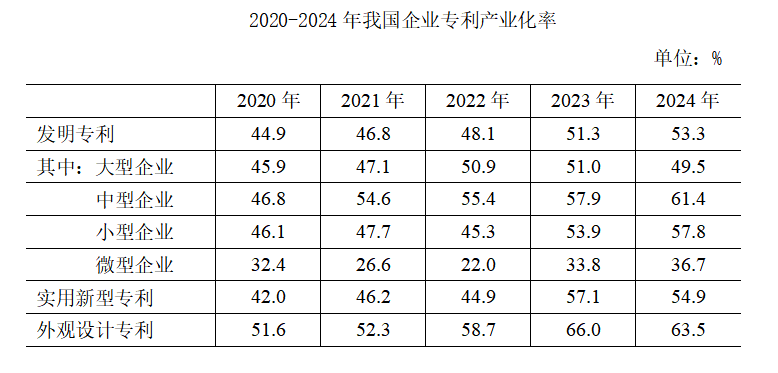
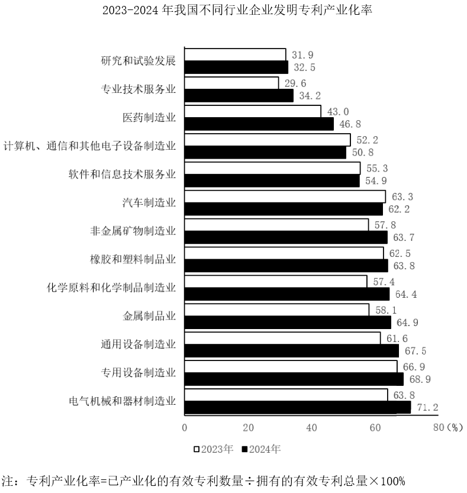
79. 2024年，我国企业发明专利产业化平均收益比上年增长约多少万元/件？
答案：C
解析：根据题干“2024年······比上年增长约多少万元/件”，可判定本题为增长量计算问题。定位文字材料可得：2024年，我国企业发明专利产业化平均收益为869.5万元/件，较上年增长4.8%。根据公式：增长量 ，则所求万元/件，与C项最接近。
，则所求万元/件，与C项最接近。
80. 将我国企业的发明专利、实用新型专利、外观设计专利按产业化率从高到低排序，则2020~2023年中次序与2024年次序一致的年份有几个？
答案：B
解析：定位统计表可得2020-2024年，我国企业的发明专利、实用新型专利、外观设计专利产业化率。将我国企业的各类专利按产业化率从高到低排序分别为：
2020年，外观设计专利（51.6%）、发明专利（44.9%）、实用新型专利（42.0%）；
2021年，外观设计专利（52.3%）、发明专利（46.8%）、实用新型专利（46.2%）；
2022年，外观设计专利（58.7%）、发明专利（48.1%）、实用新型专利（44.9%）；
2023年，外观设计专利（66.0%）、实用新型专利（57.1%）、发明专利（51.3%）；
2024年，外观设计专利（63.5%）、实用新型专利（54.9%）、发明专利（53.3%）。
则2020~2023年中次序与2024年次序一致的年份是2023年，共1个。
81. 2024年，我国大型企业平均每拥有1件有效发明专利产生的专利产业化收益约是我国中型企业的多少倍？
答案：A
解析：根据题干“2024年······约是······的多少倍”，结合材料时间为2024年，可判定本题为现期倍数问题。定位文字材料可得：2024年，我国中型企业发明专利产业化平均收益（平均每件已产业化的有效专利产生的收益）为991.9万元/件，大型企业为953.9万元/件；定位统计表可得：2024年我国大型企业专利产业化率为49.5%，中型企业为61.4%。有效发明专利中包括已产业化专利和未产业化专利，则平均每拥有1件有效发明专利产生的专利产业化收益，则所求倍数，与A项最接近。
82. 资料所列13个行业中，2024年企业发明专利产业化率同比增量超过3个百分点的有几个？
答案：C
解析：根据题干“2024年······同比增量超过······有几个”，可判定本题为增长量计算问题。定位统计图可知2023年及2024年我国不同行业企业发明专利产业化率。根据公式：增长量=现期量-基期量，本题所求企业发明专利产业化率的增长量，2024年企业发明专利产业化率相当于现期量，2023年企业发明专利产业化率相当于基期量，故2024年各行业企业发明专利产业化率的同比增量如下：
研究和试验发展：32.5%-31.9%=0.6个百分点，不符合；
专业技术服务业：34.2%-29.6%=4.6个百分点，符合；
医药制造业：46.8%-43.0%=3.8个百分点，符合；
计算机、通信和其他电子设备制造业：50.8%<52.2%，即同比减少，不符合；
软件和信息技术服务业：54.9%<55.3%，即同比减少，不符合；
汽车制造业：62.2%<63.3%，即同比减少，不符合；
非金属矿物制造业：63.7%-57.8%=5.9个百分点，符合；
橡胶和塑料制品业：63.8%-62.5%=1.3个百分点，不符合；
化学原料和化学制品制造业：64.4%-57.4%=7.0个百分点，符合；
金属制品业：64.9%-58.1%=6.8个百分点，符合；
通用设备制造业：67.5%-61.6%=5.9个百分点，符合；
专用设备制造业：68.9%-66.9%=2.0个百分点，不符合；
电气机械和器材制造业：71.2%-63.8%=7.4个百分点，符合。
综上，资料所列13个行业中，2024年企业发明专利产业化率同比增量超过3个百分点的有7个。
83. 在①2023年未来产业领域企业发明专利产业化平均收益、②2024年小微企业发明专利产业化总体平均收益、③2023年金属制品业大型企业发明专利产业化率3项指标中，能够从上述资料中推出的有几项？
答案：D
解析：①定位文字材料可得：2024年，我国未来产业领域的企业发明专利产业化平均收益为1132.7万元/件。并未给出相较于2023年的增长率或增长量，故无法推出2023年未来产业领域企业发明专利产业化平均收益；
②定位文字材料可得：2024年，小型企业发明专利产业化平均收益为752.4万元/件，微型企业为260.1万元/件。并未给出小型企业和微型企业已产业化的有效专利数量，故无法推出2024年小微企业发明专利产业化总体平均收益；
③定位统计表可知2023年大型企业发明专利产业化率；定位柱状图可知2023年金属制品业企业发明专利产业化率。并未给出金属制品业大型企业发明专利产业化率的情况，故无法推出2023年金属制品业大型企业发明专利产业化率。
综上，3项均无法推出。
科幻产业包括科幻阅读、科幻影视、科幻游戏、科幻衍生品、科幻文旅五大领域。2024年，我国科幻产业总营收1089.6亿元。


84. 2021~2024年，我国科幻产业累计营收额约是2017~2020年的多少倍？
答案：B
解析：根据题干“2021~2024年······约是2017~2020年的多少倍”，结合材料已给出2017~2024年的相关数据，可判定本题为现期倍数问题。定位统计图1可得2017~2024年我国科幻产业营收额，则所求倍数
 倍。
倍。
85. 如保持2024年同比增量不变，则2026-2030年，我国科幻游戏产业累计营收将在以下哪个范围内？
答案：D
解析：根据题干“如保持2024年同比增量不变，则2026-2030年······将在以下哪个范围内”，结合材料时间为2022-2024年，可判定本题为现期计算问题。定位统计图2可得：2023年、2024年我国科幻游戏产业营收分别为：651.9亿元、718.1亿元。根据公式：增长量=现期量-基期量，则2024年我国科幻游戏产业营收同比增量=718.1-651.9=66.2亿元。根据公式：现期量=基期量+n×增长量（n为年份差），则2026年营收=718.1+66.2×2=850.5亿元。可知2026-2030年累计营收构成首项为850.5、公差为66.2、项数为5的等差数列，根据等差数列求和公式：（n为项数），则2026-2030年，我国科幻游戏产业累计营收 亿元，在D项范围内。
亿元，在D项范围内。
86. 我国科幻产业五大领域中，2024年营收额同比增速快于2023年水平的有几个？
答案：C
解析：根据题干“······2024年······同比增速快于2023年水平······”，可判定本题为一般增长率比较问题。定位统计图2可得：2024年我国科幻产业五大领域营收额分别为：35.1亿元、67.1亿元、718.1亿元、25.3亿元、244.0亿元；2023年我国科幻产业五大领域营收额分别为：31.7亿元、115.9亿元、651.9亿元、22.8亿元、310.6亿元；2022年我国科幻产业五大领域营收额分别为：30.4亿元、83.5亿元、565.0亿元、48.3亿元、150.3亿元，根据公式：增长率可得：
2024年我国科幻产业五大领域营收额的同比增速分别如下：
科幻阅读：；
科幻影视：；
科幻游戏： ；
；
科幻衍生品： ；
；
科幻文旅： 。
。
2023年我国科幻产业五大领域营收额的同比增速分别如下：
科幻阅读： ；
；
科幻影视： ；
；
科幻游戏：；
科幻衍生品： ；
；
科幻文旅：。
综上可知，我国科幻产业五大领域中，2024年营收额同比增速快于2023年水平的有科幻阅读、科幻衍生品两个领域。
87. 2022~2024年，科幻文旅营收额占科幻产业营收额的比重超过20%的年份仅包括：
答案：A
解析：根据题干“2022~2024年······占······的比重超过20%的年份仅包括”，结合材料时间为2022~2024年，可判定本题为现期比重问题。定位图1可得：2022~2024年我国科幻产业营收额分别为877.5亿元、1132.9亿元、1089.6亿元；定位图2可得：2022~2024年我国科幻文旅营收额分别为150.3亿元、310.6亿元、244.0亿元。根据公式：比重 ，则2022~2024年，科幻文旅营收额占科幻产业营收额的比重分别为：
，则2022~2024年，科幻文旅营收额占科幻产业营收额的比重分别为：
2022年： ；
；
2023年： ；
；
2024年： 。
。
综上所述，2022~2024年，科幻文旅营收额占科幻产业营收额的比重超过20%的年份仅包括2023和2024年。
88. 以下柱状图反映了哪一时间段内，我国科幻产业营收额同比增量的变化情况（横轴位置表示增量为0）？
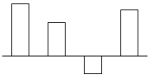
答案：D
解析：根据题干“······我国科幻产业营收额同比增量的变化情况······”，可判定本题为增长量比较问题。定位图1可知2017~2024年我国科幻产业各年度营收额，根据公式：增长量=现期量-基期量，则选项中各年份增长量分别为：
A项：2021年，829.6-551.1=278.5亿元；2022年，877.5-829.6=47.9亿元；2023年，1132.9-877.5=255.4亿元，题干图中第三年增长量为负，排除。
B项：2020年，551.1-658.7=-107.6亿元，题干图中第一年增长量为正，排除。
C项：2019年，658.6-456.4=202.2亿元；2020年，551.1-658.7=-107.6亿元，题干图中第二年增长量为正，排除。
D项：2018年，456.4-140.0=316.4亿元；2019年，658.6-456.4=202.2亿元；2020年，551.1-658.7=-107.6亿元；2021年，829.6-551.1=278.5亿元，符合题干图形的变化情况，当选。
2025年清明假期3天，Y省接待游客2110.5万人次，同比增长6.4%；实现旅游收入107.8亿元，同比增长8.7%。全省4A级及以上景区接待游客657.5万人次，同比增长7.4%；纳入监测的13家红色旅游经典景区接待游客54.7万人次，同比增长5.1%。
2025年“五一”假期5天，Y省接待游客4608.2万人次，同比增长18.7%；实现旅游收入295亿元，同比增长20.3%。全省4A级及以上景区接待游客1629.9万人次，同比增长14.3%；纳入监测的13家红色旅游经典景区接待游客119.5万人次，同比增长12.0%。
2025年端午假期3天，Y省接待游客2321.0万人次，同比增长20.6%；实现旅游收入114.4亿元，同比增长25.6%。全省4A级及以上景区接待游客726.1万人次，同比增长18.9%；纳入监测的13家红色旅游经典景区接待游客54.4万人次，同比增长17.5%。
89. 2025年清明假期、“五一”假期和端午假期，Y省接待游客总人次数比上年增长了：
答案：B
解析：根据题干“······接待游客总人次数比上年增长了”，结合选项带单位，可判定本题为增长量计算问题。定位文字材料第一、二、三段可得：2025年清明假期，Y省接待游客2110.5万人次，同比增长6.4%；“五一”假期，Y省接待游客4608.2万人次，同比增长18.7%；端午假期，Y省接待游客2321.0万人次，同比增长20.6%。根据公式：增长量，可得所求万人次，在B项范围内。
90. 2025年“五一”假期，Y省平均每接待1人次游客产生的旅游收入比清明假期：
答案：A
解析：根据题干“2025年······平均每接待1人次游客产生的旅游收入比清明假期”，结合选项为高/低+百分数，可判定本题为平均数的增长率问题。定位材料第一、二段可得：2025年清明假期3天，Y省接待游客2110.5万人次；实现旅游收入107.8亿元。2025年“五一”假期5天，Y省接待游客4608.2万人次；实现旅游收入295亿元。根据公式：平均每接待1人次游客产生的旅游收入，故“五一”假期平均每接待1人次游客产生的旅游收入为，清明假期平均每接待1人次游客产生的旅游收入为，则所求为，即约高25%，在A项范围内。
91. 将Y省2024年清明假期、“五一”假期和端午假期日均实现旅游收入从高到低排列，以下正确的是：
答案：C
解析：根据题干“将Y省2024年······日均······”，结合材料时间为2025年，可判定本题为基期平均数问题。定位文字材料第一、二、三段可得：2025年清明假期3天······实现旅游收入107.8亿元，同比增长8.7%；2025年“五一”假期5天······实现旅游收入295亿元，同比增长20.3%；2025年端午假期3天······实现旅游收入114.4亿元，同比增长25.6%。根据公式：基期量 ，则2024年清明假期日均实现旅游收入为亿元/天，2024年“五一”假期日均实现旅游收入为亿元/天，2024年端午假期日均实现旅游收入为亿元/天。故Y省2024年日均实现旅游收入从高到低排列为“五一”假期、清明假期、端午假期。
，则2024年清明假期日均实现旅游收入为亿元/天，2024年“五一”假期日均实现旅游收入为亿元/天，2024年端午假期日均实现旅游收入为亿元/天。故Y省2024年日均实现旅游收入从高到低排列为“五一”假期、清明假期、端午假期。
92. 2025年清明假期、“五一”假期和端午假期Y省接待的游客中，平均每万人次中有多少人次前往纳入监测的13家红色旅游经典景区旅游？
答案：B
解析：根据题干“2025年······平均每万人次······”，结合材料时间为2025年，可判定本题为现期平均数问题。定位文字材料第一、二、三段可得2025年清明假期、“五一”假期、端午假期Y省接待游客人次数以及纳入监测的13家红色旅游经典景区接待游客人次数。则题干所求人次，在B项范围内。
93. 以下柱状图反映了2025年清明假期、“五一”假期和端午假期，Y省接待游客哪一指标的变化情况（横轴位置表示数值为0）？
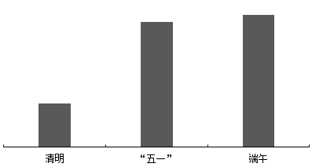
答案：A
解析：根据题干“以下柱状图反映了2025年······Y省接待游客哪一指标的变化情况······”，结合选项中涉及日均接待游客数，可判定本题为平均数问题。定位材料第一、二、三段可得2025年清明假期、“五一”假期和端午假期的天数、Y省接待游客各指标数据和同比增长率。根据公式：平均数，增长量 ，可得Y省接待游客各指标的数据情况如下：
，可得Y省接待游客各指标的数据情况如下：
A项，纳入监测的13家红色旅游经典景区日均接待游客数同比增量：清明假期，万人次；“五一”假期，万人次；端午假期，万人次，符合柱状图变化趋势，当选；
B项，纳入监测的13家红色旅游经典景区日均接待游客数量：清明假期，万人次；端午假期，万人次。清明假期日均接待游客数量与端午假期几乎相等，不符合柱状图变化趋势，排除；
C项，4A级及以上景区日均接待游客数同比增量：清明假期，万人次；“五一”假期，人次；端午假期，万人次。“五一”假期同比增量>端午假期同比增量，不符合柱状图变化趋势，排除；
D项，4A级及以上景区日均接待游客数量：清明假期，万人次；“五一”假期，万人次；端午假期，万人次。“五一”假期日均接待游客数量>端午假期日均接待游客数量，不符合柱状图变化趋势，排除。